Проектирование железобетонных сборно-монолитных конструкций
Справочное пособие
к СНиП 2.03.01-84
Москва
Стройиздат
Ордена Трудового Красного Знамени
Научно-исследовательский, проектно-конструкторский
и технологический институт бетона и железобетона
(НИИЖБ) Госстроя СССР
Справочное пособие
к СНиП
Серия основана в 1989 году
Проектирование железобетонных
сборно-монолитных конструкций
Москва
Стройиздат
1991
Разработано к СНиП 2.03.01-84 «Бетонные и железобетонные конструкции». Содержит основные положения по проектированию сборно-монолитных конструкций из тяжелого бетона, расчет по предельным состояниям первой группы (в том числе прочности контактных швов), расчет по предельным состояниям второй группы, конструктивные требования и примеры расчета.
Для инженерно-технических работников проектных и научно-исследовательских организаций.
ПРЕДИСЛОВИЕ
Пособие содержит положения по проектированию железобетонных элементов из тяжелого бетона сборно-монолитных конструкций зданий и сооружений для промышленного, гражданского и сельскохозяйственного строительства.
Рассматриваются элементы железобетонных сборно-монолитных конструкций, поперечные сечения которых состоят из сборных элементов и дополнительно уложенных на месте использования конструкций монолитного бетона и арматуры.
Проектирование сборных элементов до приобретения монолитным бетоном заданной прочности следует производить по СНиП 2.03.01-84. При проектировании сборно-монолитных конструкций необходимо учитывать требования СНиП 2.03.01-84 и настоящего Пособия. Требования норм, не содержащие специфики сборно-монолитных конструкций, в настоящее Пособие не включены, но приведены соответствующие ссылки на разделы, пункты и формулы СНиП 2.03.01-84.
Разделы Пособия сопровождаются примерами расчета элементов сборно-монолитных конструкций.
В расчете прочности по нормальным и наклонным сечениям расчетные зависимости построены с учетом различной прочности бетона сборного элемента и монолитного бетона.
Рассмотрен вопрос расчета прочности контактных швов между бетоном сборного элемента и дополнительно уложенным бетоном. Расчет контактных швов производится исходя из предельного состояния по поверхности шва, ограниченного наклонными трещинами. Более подробно с использованием основных положений Строительных норм и правил изложена методика расчета по образованию нормальных и наклонных трещин. Расчет по деформациям увязан с методикой расчета, принятой в СНиП 2.03.01-84. Раздел конструктивных требований дополнен примерами наиболее современных конструктивных решений сборно-монолитных конструкций.
Пособие разработано НИИЖБ Госстроя СССР (д-ра техн. наук, проф. А.С. Залесов, Е.А. Чистяков - разд. 1 - 4, канд. техн. наук А.Е. Кузьмичев - разд. 4), при участии НИИСК Госстроя СССР (д-р техн. наук, проф. А.Б. Голышев, кандидаты техн. наук В.Я. Бачинский, А.В. Харченко - разд. 2, пп. 2.34 - 2.37, разд. 3), СамГАСИ (канд. техн. наук В.Ф. Усманов - разд. 3), Казанского ИСИ (канд. техн. наук Я.Г. Сунгатуллин, инженеры Г.С. Валеев, Ю.Н. Волков - разд. 2, пп. 2.25 - 2.33) и Курского ПИ (канд. техн. наук В.П. Полищук - разд. 2, пп. 2.1 - 2.24).
Замечания и предложения просим направлять в НИИЖБ по адресу: 109428, Москва, 2-я Институтская, д. 6.
1. ОСНОВНЫЕ ПОЛОЖЕНИЯ
1.1. В Пособии рассматриваются элементы железобетонных сборно-монолитных конструкций, поперечные сечения которых состоят из заранее изготовленных элементов (сборных элементов) и дополнительно уложенных на месте использования конструкций монолитного бетона (бетона омоноличивания) и арматуры (рис. 1).
1.2. В качестве сборных элементов можно применять как специально запроектированные, так и типовые железобетонные обычные или преднапряженные элементы сборных конструкций.
Сборные элементы рекомендуется проектировать так, чтобы они отвечали условиям механизированного изготовления их на специализированных предприятиях и по возможности использовались в качестве опалубки во время монтажа конструкции.
Размеры сборных элементов назначают из условий простоты их изготовления, эффективного расположения в конструкции и обеспечения требуемой прочности швов сопряжения с бетоном омоноличивания. Примеры решения некоторых сборных элементов показаны на рис. 2.
1.3. Сборно-монолитные железобетонные конструкции должны удовлетворять требованиям расчета по несущей способности (предельные состояния первой группы) и по пригодности к нормальной эксплуатации (предельные состояния второй группы).
Сборно-монолитные конструкции следует рассчитывать по прочности, образованию и раскрытию трещин и по деформациям для следующих двух стадий работы конструкций:
до приобретения бетоном, уложенным на месте использования конструкции (бетоном омоноличивания), заданной прочности - на воздействие массы этого бетона и других нагрузок, действующих на данном этапе возведения конструкции;
после приобретения бетоном, уложенным на месте использования конструкции (бетоном омоноличивания), заданной прочности - на нагрузки, действующие на этом этапе возведения и при эксплуатации конструкции.
Расчет сборных элементов до приобретения бетоном омоноличивания заданной прочности производится в соответствии с требованиями СНиП 2.03.01-84; расчет элементов сборно-монолитных конструкций после приобретения бетоном омоноличивания заданной прочности - в соответствии с рекомендациями настоящего Пособия. При этом в тексте Пособия характеристики, относящиеся к сборным элементам, имеют индекс 1, а к бетону омоноличивания - 2.
1.4. Значения нагрузок и воздействий, коэффициентов надежности по нагрузке, коэффициентов сочетаний, а также подразделение нагрузок на постоянные и временные (длительные и кратковременные) должны приниматься в соответствии с требованиями СНиП 2.01.07-85.
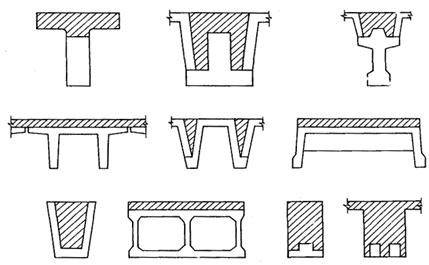
Рис. 1. Сечения сборно-монолитных конструкций
(заштрихован - монолитный бетон)
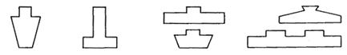
Рис. 2. Сечения сборных элементов
1.5. Материалы для сборно-монолитных конструкций и их характеристики принимают в соответствии с разд. 2 СНиП 2.03.01-84.
1.6. Надежную связь бетона омоноличивания с бетоном сборных элементов рекомендуется осуществлять с помощью арматуры, выпускаемой из сборных элементов, путем устройства бетонных шпонок или шероховатой поверхности, продольных выступов, или с помощью других надежных, проверенных способов. При этом в проектах рекомендуется предусматривать меры по обеспечению проектного положения выпущенной из сборных элементов арматуры, а также по защите ее от коррозии и давать указание о том, что поверхности сборных элементов конструкции, подлежащие обетонированию, должны быть тщательно очищены и промыты.
2. РАСЧЕТ ЖЕЛЕЗОБЕТОННЫХ СБОРНО-МОНОЛИТНЫХ КОНСТРУКЦИЙ ПО ПРЕДЕЛЬНЫМ СОСТОЯНИЯМ ПЕРВОЙ ГРУППЫ
РАСЧЕТ ЖЕЛЕЗОБЕТОННЫХ СБОРНО-МОНОЛИТНЫХ ЭЛЕМЕНТОВ ПО ПРОЧНОСТИ
2.1. Расчет прочности сборно-монолитных элементов по сечениям, нормальным и наклонным к продольной оси элемента, производится согласно указаниям пп. 2.2 - 2.24. Кроме того, производится расчет по прочности контактных швов между сборным элементом и монолитным бетоном согласно указаниям пп. 2.25 - 2.33. Расчет прочности по пространственным сечениям (при наличии крутящих моментов), а также на местное действие нагрузки производится по СНиП 2.03.01-84 с учетом конкретных особенностей сборно-монолитных конструкций.
Расчет сечений, нормальных к продольной оси элемента
2.2. Предельные усилия в сечении элемента определяют с учетом п. 3.10 СНиП 2.03.01-84.
2.4. Расчет сечений в общем случае производят в соответствии с п. 3.28 СНиП 2.03.01-84. При этом в формулах (65) и (66) вместо RbSb и RbAb следует подставлять суммы åRbjSbj, и åRbjAbj, где Rbj - расчетное сопротивление сжатию j-го бетона (соответствующего класса) в сечении сборно-монолитного элемента; Sbj - статический момент площади сечения сжатой зоны j-го бетона относительно соответствующей оси, принятой для определения момента М в формуле (65). В изгибаемых элементах положение оси принимают таким, как и во внецентренно сжатых; Abj - часть площади сечения сжатой зоны бетона соответствующего класса.
Кроме того, при определении характеристики сжатой зоны w по формуле (26) п. 3.12 СНиП 2.03.01-84 значение Rb принимают равным
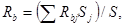
где S и Sj - статические моменты соответственно всей площади поперечного сечения сборно-монолитного элемента и площадей, образованных j-м бетоном с прочностью бетона Rbj, относительно оси, проходящей по центру тяжести крайнего растянутого стержня арматуры.
2.5. Расчет сечений сборно-монолитных элементов в случае, когда внешняя сила действует в плоскости оси симметрии сечения и арматура сосредоточена у перпендикулярных указанной плоскости граней элемента, производят в соответствии с пп. 3.11 - 3.14, 3.16, 3.27 СНиП 2.03.01-84 и пп. 2.4, 2.7 - 2.14 настоящего Пособия.
Рис. 3. Сечение элемента
1 - сборный элемент; 2 - монолитный бетон
2.6. Для железобетонных слабоармированных элементов, характеризуемых тем, что их несущая способность исчерпывается одновременно с образованием трещин в бетоне растянутой зоны, площадь сечения продольной растянутой арматуры должна быть увеличена по сравнению с требуемой из расчета по прочности не менее чем на 15%.
Такое увеличение армирования
следует производить при выполнении условий: 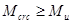 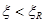 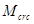
Изгибаемые элементы
Прямоугольные сечения
2.7.
Расчет прямоугольных сечений с арматурой, сосредоточенной у растянутой и сжатой
граней сборно-монолитного элемента (рис.
3) при 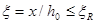 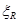
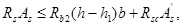
расчет производят, как для элемента выполненного из бетона одного класса (в данном случае монолитного), из условия
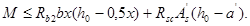
При этом высоту сжатой зоны x определяют по формуле
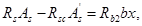
Если x£0, прочность проверяется из условия
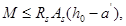
Если высота сжатой зоны, определенная с учетом половины сжатой арматуры
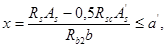
расчетную несущую способность
сечения можно несколько увеличить, производя расчет по формулам (3) и (4) без учета сжатой арматуры 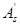
б) если условие (2) не соблюдается, т. е. x>h-h1 (см. рис. 3), расчет производят с учетом различного бетона в сжатой зоне элемента из условия
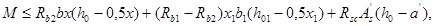
где x1=x-h+h1.
Высоту сжатой зоны x определяют по формуле
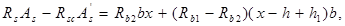
или
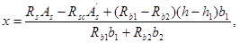
2.8. Расчет сечения, представленного на рис. 4, производят из условия
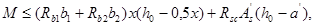
где
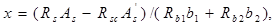
Сечения с полкой в сжатой зоне
2.9. Расчет сечений,
имеющих полку в сжатой зоне (рис. 5), при
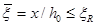
а) если граница проходит в полке в пределах бетона омоноличивания, т.е. соблюдается условие
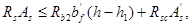
расчет производят как для элемента
прямоугольного сечения шириной 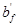
б) если граница сжатой зоны проходит в полке и пересекает участок из другого бетона, т. е. соблюдаются условия и x>h-h1
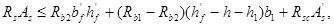
расчет производят как для элементов прямоугольного сечения шириной согласно указаниям п. 2.7 б;
Рис. 4. Сечение элемента
1 - сборный элемент; 2 - монолитный бетон
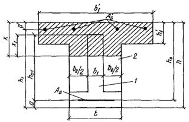
Рис. 5. Сечение элемента
1 - сборный элемент; 2 - монолитный бетон
в) если граница проходит в ребре (см. рис. 5), т.е. условие (11) не соблюдается, расчет производят из условия
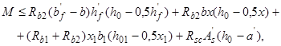
где x1=x-h+h1.
Высоту сжатой зоны x определяют по формуле
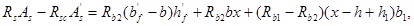
или
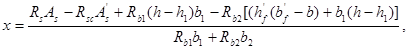
При проверке условий (10) и (11) для элементов с высокопрочной арматурой значения
коэффициента условий работы арматуры gs6 определяют по формуле (27) п. 3.13 СНиП
2.03.01-84 соответственно при 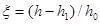 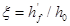
2.10. Тавровое сечение с полкой из монолитного бетона (рис. 6) рассчитывают в зависимости от положения границы сжатой зоны:
а) если граница сжатой зоны проходит в полке, т.е. соблюдается условие
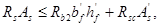
расчет производят как для элементов прямоугольного сечения шириной , выполненных из одного бетона (монолитного), в соответствии с указаниями п. 2.7 а;
при проверке условия (15) для элементов с высокопрочной арматурой значения коэффициента условий работы арматуры gs6 определяют при .
Рис. 6. Сечение элемента
1 - сборный элемент; 2 - монолитный бетон
б) если граница сжатой зоны проходит в ребре (см. рис. 6), т.е. условие (15) не соблюдается, расчет производят из условия
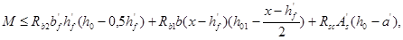
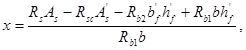
2.11. Расчет таврового сечения с полкой сборного элемента и из монолитного бетона (рис. 7) производят из условий:
а) если граница сжатой зоны проходит в полке из монолитного бетона, т.е.
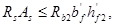
расчет производят как для элемента
прямоугольного сечения шириной , выполненного из одного бетона
(монолитного), в соответствии с указаниями п.
2.7а, принимая 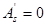
б) если граница сжатой зоны проходит в полке сборного элемента, т.е. условие (18) не удовлетворяется и
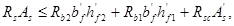
расчет производят как для элементов прямоугольного сечения шириной с учетом бетона разных классов
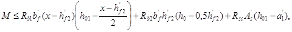
Высоту сжатой зоны определяют по формуле
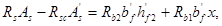
или
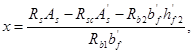
принимая во внимание указания п. 2.7а по учету арматуры .
Рис. 7. Сечение элемента
1 - сборный элемент; 2 - монолитный бетон
При проверке условий (18) и (19) для элементов с высокопрочной арматурой значения gs6
определяют соответственно при 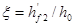
в) если условие (19) не соблюдается, т.е. граница сжатой зоны проходит в ребре, расчет производят из условия
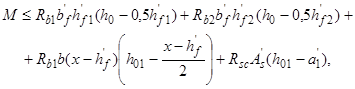
Высоту сжатой зоны x определяют по формуле
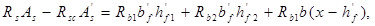
или
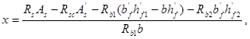
2.12. Расчет по прочности
изгибаемых элементов при 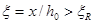
Внецентренно сжатые элементы
2.13. При расчете по прочности внецентренно сжатых железобетонных элементов следует принимать во внимание случайный эксцентриситет согласно п. 1.21 СНиП 2.03.01-84.
2.14. Расчет внецентренно сжатых элементов следует производить с учетом влияния прогиба на их несущую способность в соответствии с указаниями п. 3.24 СНиП 2.03.01-84. Для вычисления коэффициента h условную критическую силу для элементов сборно-монолитных конструкций определяют по формуле
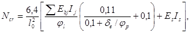
где Ebj
- модуль упругости j-го бетона; Ij
- момент инерции j-го бетона относительно центра
тяжести всего бетонного сечения; 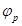
Значение de, min определяют по формуле (22) п. 3.6 СНиП 2.03.01-84 с учетом значения Rb по формуле (1) Пособия. Остальные величины определяют по СНиП 2.03.01-84.
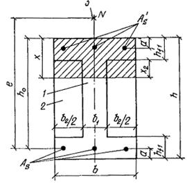
Рис. 8. Сечение элемента
1 - сборный элемент; 2 - монолитный бетон; 3 - точка приложения силы N
2.15. Расчет прямоугольных сечений с арматурой, сосредоточенной у растянутой и сжатой граней сборно-монолитного элемента (рис. 8), производят при следующим образом:
а) если соблюдается условие
расчет производят как для сборного элемента, выполненного из бетона одного класса (Rb1), из условия
Высоту сжатой зоны x определяют по формуле
Если высота сжатой зоны, определенная с учетом половины сжатой арматуры,
расчетную несущую способность сечения можно несколько увеличить, производя расчет по формулам (28) и (29) без учета сжатой арматуры ;
б) если условие (27) не соблюдается, т.е. х, (см. рис. 8), расчет производят с учетом различного бетона в сжатой зоне элемента из условия
(30)
где
Высоту сжатой зоны x определяют по формуле
(31)
2.16. Расчет внецентренно сжатых элементов с сечениями, показанными на рис. 3 - 7, при ,производят в соответствии с пп. 2.7 - 2.11, добавляя в формулах (2), (4), (6), (7), (9) - (11), (13) - (15), (17) - (19), (21), (22), (24), (25) к произведению RsAs значение продольной силы N, а в формулах (3), (5), (8), (12), (16), (20) и (23) принимая M=Ne, где е - расстояние от точки приложения силы N до центра тяжести наиболее удаленного растянутого стержня арматуры.
2.17. Расчет внецентренно сжатых элементов при производят в соответствии с п. 2.4 Пособия.
Для элементов с арматурой класса A-III и ниже расчет при производят из условия
при этом высоту сжатой зоны определяют по формуле
(33)
где
или с учетом (34) по формуле
При этом, если вычисленное по формуле (35) значение x/h0>1, следует высоту сжатой зоны определять по формуле
(36)
Sbj - см. п. 2.4.
Внецентренно растянутые элементы
2.18. Расчет внецентренно растянутых элементов производят в соответствии с п. 3.27 СНиП 2.03.01-84 с учетом наличия в сжатой зоне элементов бетонов разного класса.
ПРИМЕРЫ РАСЧЕТА
Пример 1. Дано: размеры сечения - b=300 мм, h=700 мм, a=a’=50 мм, h0=650 мм, h1=600 мм, h01=550 мм, b1=120 мм, =100 мм, b2=180 мм (рис. 9); нагрузки с малой суммарной длительностью отсутствуют (ssc, u=500 МПа), бетон сборного элемента класса В30 (Rb1=15,3 МПа при gb2=0,9); бетон омоноличивания класса В15 (Rb2=7,7 МПа при gb2=0,9); напрягаемая арматура класса A-IV (Rs=510 МПа), площадью сечения Asp=1847 мм2 (3Æ28); предварительное напряжение при gsp<1 с учетом всех потерь ssp=400 МПа; ненапрягаемая арматура класса A-III (Rs=365 МПа) площадью сечения =226 мм2 (2Æ12); изгибающий момент М=500 кНм; натяжение арматуры электротермическое (согласно п. 3.28 СНиП 2.03.01-84 Dssp=0).
Рис. 9. Сечение элемента
1 - сборный элемент; 2 - монолитный бетон
Требуется проверить прочность сечения после приобретения бетоном омоноличивания заданной прочности.
Расчет: проверку прочности сечения производим согласно п. 2.7. Проверяем условие (2)
где =;
=510×1847=9,41×105 H;
7,7(700-600)300+365×226=3,13×105 Н<9,41×105 Н.
Так как условие (2) не соблюдается, то следовательно, в сжатой зоне находится также часть сборного элемента. По формуле (7) определяем значение x
x=x/h0=294/650=0,453.
Для определения xR в соответствии с п. 3.12 СНиП 2.03.01-84 вычисляем w и ssR. w=0,85-0,008Rb, где Rb определяем из формулы (1) Пособия.
S=hb(0,5h-a)=700×300(350-50)=6,3×107 мм3;
S1=h1b1(0,5h1-a)=600×120(300-50)=1,8×107 мм3;
S2=S-S1=6,3×1047-1,8×107=4,5×107 мм3.
w=0,85-0,008×9,9=0,77;
ssR=Rs+400-ssp=510+400-400=510 МПа.
Значение xR определяем по формуле (25) СНиП 2.03.01-84
Рис. 10. Сечение элемента
1 - сборный элемент; 2 - монолитный бетон
Так как , определяем вновь высоту сжатой зоны с учетом коэффициента gs6 для напрягаемой арматуры при h=1,2.
gs6=h-(h-1)(2x/xR-1)=1,2-0,2(2(0,453/0,59)-1)=1,1<1,2.
Тогда
x=0,5.
Проверяем условие (5) при x1=x-h+h1=325-700+600=225 мм.
т. е. прочность сечения обеспечена.
Пример 2. Дано: размеры сечения - =1500 мм, =60 мм, b=200 мм, h=500 мм, h1=440 мм, a=50 мм, h0=450 мм, h01=390 мм (рис. 10); нагрузки малой суммарной длительности отсутствуют (ssc, u=500 МПа); бетон сборного элемента класса В35 (Rb1=17,6 МПа при gb2=0,9), бетон омоноличивания класса В15 (Rb2=7,7 МПа при gb2=0,9); растянутая арматура класса A-III (Rs=365 МПа) с площадью сечения As=3079 мм2 (5Æ28), =0; изгибающий момент М=420 кНм.
Требуется проверить прочность сечения.
Расчет: проверку прочности сечения производим по п. 2.10.
Проверяем условие (15)
RsAs=365×3079=11,22×105 Н;
=7,7×1500×60=6,93×105 Н< RsAs=11,22×105 Н.
Так как условие (15) не соблюдается, в сжатой зоне находится часть сборного элемента и расчет ведем по формулам (16) и (17)
Определяем xR ,w, Rb, ssR.
S1=h1b(0,5h1-a)=440×200(220-50)=1,6×107 мм3;
w=0,85-0,008Rb=0,85-0,008×10,65=0,765;
ssR=Rs=365 МПа.
Проверяем условие (16)
т.е. прочность сечения обеспечена.
Пример 3. Дано: размеры сечения b1=200 мм, b2=100 мм, h=540 мм, hf1=120 мм, a=40 мм, а¢=40 мм, h0=500 мм (рис. 11); нагрузки малой суммарной длительности отсутствуют (ssc, u=500 МПа); бетон сборного элемента класса В30 (Rb1=15,3 МПа при gb2=0,9), бетон омоноличивания класса В15 (Rb2=7,7 МПа при gb2=0,9); арматура класса A-III (Rs=Rsc=365 МПа) с площадью сечения As=3217 мм2 (4Æ32) и =628 мм2 (2Æ20); внешняя продольная сила N=900 кН приложена после достижения монолитным бетоном заданной прочности с эксцентриситетом относительно центра тяжести сечения растянутой арматуры e=650 мм.
Требуется проверить прочность сечения.
Расчет: проверку прочности сечения производим согласно п. 2.8 с учетом влияния продольной силы (п. 2.16).
Определяем высоту сжатой зоны x по формуле (9) с учетом силы N (п. 2.16).
Определяем xR ,w, Rb, ssR.
S1=hb1(0,5h-a)+ hf1b2(0,5hf1-a)=540×200(270-40)+120×100(60-40)=2,51×107 мм3;
Рис. 11. Сечение элемента
1 - сборный элемент; 2 - монолитный бетон
S=S1+S2=3,728×107 мм3;
w=0,85-0,008Rb=0,85-0,008×11,5=0,758;
ssR=Rs=365 МПа.
Так как, расчет продолжаем вести в соответствии с указаниями п. 2.17.
По формуле (35) определяем высоту сжатой зоны x
Отсюда
Проверяем условие (32)
Sb1=xb1(h0-0,5x)=342×200(540-171)=25,2×106 мм3;
Sb2=xb2(h0-0,5x)=342×100(540-171)=12,6×106 мм3;
=15,3×25,2×106+7,7×12,6×106+365×628×(500-40)=588,1×106 H×мм=588,1 кНм>Ne=900×0,65=585 кНм, т.е. прочность сечения обеспечена.
Рис. 12. Сечение элемента
1 - сборный элемент; 2 - монолитный бетон
Пример 4 Дано: размеры сечения b=300 мм, h=540 мм, h1=440 мм, a=a’=40 мм, h0=500 мм (рис. 12); нагрузки малой суммарной длительности отсутствуют (ssc, u=500 МПа), бетон сборного элемента класса В30 (Rb1=15,3 МПа при gb2=0,9); бетон омоноличивания класса В15 (Rb2=7,7 МПа при gb2=0,9); арматура класса A-III (Rs=Rsc=365 МПа), площадью сечения As=3217 мм2 (4Æ32) и =942 мм2 (3Æ20); изгибающий момент М=40 кНм; внешняя продольная сила N=300 кН приложена после достижения монолитным бетоном заданной прочности. Эксцентриситет силы N относительно центра тяжести сечения растянутой арматуры e=400 мм.
Требуется проверить прочность сечения.
Расчет: проверку прочности сечения производим согласно п. 2.7 (принимая b1=b и b2=0) с учетом влияния продольной силы по п. 2.16.
Проверяем условие (2)
=300000+365×3217=1472000 H;
=7,7×(540-440)300+365×942=574800 H <=1472000 H.
Следовательно, граница сжатой зоны проходит в сечении сборного элемента.
По формуле (7) с учетом силы N определяем высоту сжатой зоны x
Определяем xR ,w, Rb, ssR.
S1=h1b(0,5h1-a)=440×300(220-40)=2,38×107 мм3;
S=3,73×107 мм3;
w=0,85-0,008×12,55=0,75; ssR=365 МПа.
Проверяем условие (5) при x1=x-h+h1=296-540-440=196 мм
=
= 7,7×300×296(500-148)+(15,3-7,7)196×300(400-98)+365×942(500-40)=
=533,5×106H×мм=533,5 кНм>М+Ne=400+300×0,4=520 кНм,
т.е. прочность сечения обеспечена.
Расчет сечений, наклонных к продольной оси элемента
2.19. Расчет элементов сборно-монолитных конструкций по наклонным сечениям производят для обеспечения прочности на действие поперечной силы по наклонной полосе между наклонными трещинами; поперечной силы по наклонной трещине; изгибающего момента по наклонной трещине.
2.20. Расчет по прочности наклонных сечений производят в зависимости от конструктивного решения сборно-монолитного элемента. Для расчета по наклонным сечениям сборно-монолитные конструкции разделяются на два основных типа (рис. 13):
1-й тип - сечение сборно-монолитного элемента по высоте состоит из бетона сборного элемента и монолитного бетона (см. рис. 13,а);
2-й тип - сечение по ширине состоит из бетона сборного элемента и монолитного бетона (см. рис. 13,б).
Расчет сборно-монолитных элементов по наклонным сечениям производят при одинаковых расчетных усилиях два раза (по двум схемам расчета):
а) для конструкций 1-го типа:
по рабочей высоте и прочности бетона сборного элемента h01, Rb1, Rbt1;
по рабочей высоте сборно-монолитного элемента h0 и прочности монолитного бетона Rb2, Rbt2;
б) для конструкций 2-го типа:
по рабочей высоте сборного элемента h01 с учетом ширины участков сечения, состоящих из бетона сборного элемента и монолитного бетона с соответствующей прочностью b1, Rb1, Rbt1, b2, Rb2, Rbt2;
по рабочей высоте и ширине сборно-монолитного элемента h0, b и прочности монолитного бетона Rb2, Rbt2.
Из указанных выше двойных расчетов принимают наиболее благоприятный результат (более высокую несущую способность).
2.21. Расчет элементов на действие поперечной силы для обеспечения прочности по наклонной полосе между наклонными трещинами производят с учетом указаний п. 2.20 из условия
где Q - поперечная сила от внешней нагрузки, принимаемая в нормальном сечении на расстоянии не менее h0 от опоры; Qb,com - поперечная сила, воспринимаемая сжатой наклонной полосой между трещинами, определяемая в зависимости от типа сборно-монолитной конструкции (тип 1 и тип 2) и схемы расчета (по рабочей высоте сборного элемента или по рабочей высоте сборно-монолитного элемента).
Рис. 13. Типы сборно-монолитных конструкций
а - тип 1; б - тип 2; 1 - сборный элемент; 2 - монолитный бетон
Для сборно-монолитной конструкции 1-го типа (см. рис. 13,а) значение поперечной силы Qb,com принимают равным:
при расчете по рабочей высоте сборного элемента
при расчете по рабочей высоте сборно-монолитного элемента
Для сборно-монолитной конструкции 2-го типа (см. рис. 13,6) значение поперечной силы Qb,com принимают равным:
при расчете по рабочей высоте сборного элемента
при расчете по рабочей высоте сборно-монолитного элемента
В формулах (38) - (41): - коэффициент, учитывающий влияние поперечных стержней и определяемый по формуле
но не более 1,3;
- коэффициент, учитывающий влияние прочности бетона и определяемый по формуле
Рис. 14. Расположение наклонных сечений при схеме расчета
а - по рабочей высоте сборного элемента; б - по рабочей высоте сборно-монолитного элемента; 1 - сборный элемент; 2 - монолитный бетон
Значения , и в формулах (42) и (43) соответствуют учитываемой в формулах (38) - (41) прочности бетона Rb1 или Rb2.
2.22. Расчет элементов на действие поперечной силы для обеспечения прочности по наклонной трещине при постоянной высоте сечения по длине элемента и поперечном армировании в виде хомутов, нормальных к продольной оси элемента (рис. 14), производят с учетом указаний п. 2.20 из условия
где Q - поперечная сила от внешней нагрузки, расположенной по одну сторону от рассматриваемого сечения; при нагрузке, действующей по верхней грани элемента, допускается принимать значение Q в наиболее удаленном от опоры конце наклонного сечения; Qb - поперечное усилие, воспринимаемое бетоном; Qsw - поперечное усилие, воспринимаемое поперечной арматурой в наклонной трещине.
Значение поперечной силы Qb определяют по формуле
но принимают не менее Qb,min,
где c - длина проекции наклонного сечения на продольную ось элемента, определяемая как расстояние от вершины наклонной трещины до опоры; Mb и Qb,min - характеристики усилий, воспринимаемых бетоном в наклонном сечении, определяемые в зависимости от типа сборно-монолитной конструкции (тип 1 и тип 2) и схемы расчета (по рабочей высоте сборного элемента (см. рис. 14,а) и по рабочей высоте сборно-монолитного элемента (см. рис. 14,б).
Значение поперечной силы Qsw определяют по формуле
где qsw - усилие в поперечных стержнях на единицу длины элемента, определяемое по формуле
(47)
c0 - длина проекции наклонной трещины на продольную ось элемента, определяемая по формуле
(48)
но не более 2h01 или 2h0 (в зависимости от схемы расчета) и не менее соответственно h01 или h0, а также не более c, если c0>c.
Для сборно-монолитной конструкции 1-го типа (см. рис. 13, а) значения Mb и Qb,min принимают равными:
при расчете по рабочей высоте сборного элемента (см. рис. 14,а)
при расчете по рабочей высоте сборно-монолитного элемента (см. рис. 14,б)
Для сборно-монолитной конструкции 2-го типа (см. рис. 13,б) значения Mb и Qb,min принимают равными:
при расчете по рабочей высоте сборного элемента
при расчете по рабочей высоте сборно-монолитного элемента
jb2=2; jb3=0,6; jп - коэффициент, учитывающий влияние предварительного напряжения в сборном элементе и определяемый по формуле
(57)
но не более 0,5, где при расчете по формулам (49) и (50) - bj=b, по формулам (53) и (54) - bj=b1; <р; jf - коэффициент, учитывающий влияние сжатых полок из монолитного бетона и определяемый по формуле
(58)
но не более 0,5, при этом принимают не более b, а поперечная арматура должна проходить в полку из монолитного бетона и быть в ней надежно заанкерена.
Для поперечных стержней, устанавливаемых по расчету, т.е. когда не выполняются условия п. 2.23, должно удовлетворяться условие
(59)
где - характеристика усилия, определяемая по формулам (50), (52), (54) и (56) в зависимости от типа сборно-монолитной конструкции и схемы расчета; - рабочая высота элемента, принимаемая в зависимости от схемы расчета: по рабочей высоте сборного элемента =, по рабочей высоте сборно-монолитного элемента =.
При расчете железобетонных элементов с поперечной арматурой должна быть также обеспечена прочность по наклонному сечению в пределах участка между хомутами из условий п. 2.23.
Если поперечная арматура располагается в пределах только сборного элемента, то при расчете по рабочей высоте сборно-монолитного элемента длина c0, в пределах которой учитываются хомуты, умножается на соотношение h01/h0.
При проверке условия прочности (44) в общем случае задаются рядом наклонных сечений при различных значениях c0, не превышающих расстояние от опоры до сечения с максимальным изгибающим моментом и не более , где = при расчете по рабочей высоте сборного элемента и = при расчете по рабочей высоте сборно-монолитного элемента. В пределах длины c определяют значение длины c0, затем по значениям c и c0 находят усилия Q, Qb и Qsw, и по этим усилиям производят проверку прочности элемента.
2.23. Расчет железобетонных элементов без поперечной арматуры на действие поперечной силы для обеспечения прочности по наклонной трещине производят с учетом указаний п. 2.20 из условия
где Q - поперечная сила от внешней нагрузки, расположенной по одну сторону от рассматриваемого наклонного сечения; при нагрузке, действующей по верхней грани элемента, допускается принимать значение Q в наиболее удаленном от опоры конце наклонного сечения; Qb1 - поперечное усилие, воспринимаемое бетоном.
Значение поперечной силы Qb1 определяют по формуле:
(61)
но принимают не более Qb,max и не менее Qb,min,
где c - длина проекции наклонного сечения на продольную ось элемента; Mb1,Qb,max и Qb,min - характеристики усилий, воспринимаемых бетоном в наклонном сечении, определяемые в зависимости от типа сборно-монолитной конструкции (тип 1 и тип 2) и схемы расчета (по рабочей высоте сборного элемента и по рабочей высоте сборно-монолитного элемента).
Значение Mb1 определяют по формулам (49), (51), (53), (55), при этом вместо коэффициента jb2 в них подставляют коэффициент jb4=1,5, а коэффициент jf не учитывают.
Значение Qb,min определяют по формулам (50), (52), (54) и (56), при этом коэффициент jf не учитывают.
Для сборно-монолитных конструкций 1-го типа значение Qb,max принимают равным:
при расчете по рабочей высоте сборного элемента
(62)
при расчете по рабочей высоте сборно-монолитного элемента
(63)
Для сборно-монолитных конструкций 2-го типа значение Qb,max принимают равным:
при расчете по рабочей высоте сборного элемента
(64)
при расчете по рабочей высоте сборно-монолитного элемента
(65)
При проверке условия прочности (60) в общем случае задаются рядом наклонных сечений при различных значениях c, не превышающих расстояния от опоры до сечения с максимальным изгибающим моментом и не более (jb4/jb3)h01, где = при расчете по рабочей высоте сборного элемента и = при расчете по рабочей высоте сборно-монолитного элемента. По значениям c находят усилия Q и Qb1, а затем по этим усилиям осуществляют проверку прочности элемента.
2.24. Расчет железобетонных элементов на действие момента для обеспечения прочности по наклонной трещине производят согласно указаниям СНиП 2.03.01-84; при этом точку приложения равнодействующей усилий в сжатой зоне определяют как при расчете прочности нормальных сечений сборно-монолитных элементов.
Примеры расчета
Пример 5. Дано: балка пролетом l=6 м, размеры поперечного сечения =1500 мм, =60 мм, b=200 мм, h=500 мм, h0=450 мм, h01=390 мм, a=50 мм (рис. 15), бетон сборного элемента класса В35 (Rb1=17,6 МПа, Rbt1=1,17 МПа при gb2=0,9, Eb1=31000 МПа), монолитный бетон класса В15 (Rb2=7,7 МПа, Rbt2=0,67 МПа при gb2=0,9, Eb2=23000 МПа); поперечная арматура класса A-III (Rsw=290 МПа, Es=200000 МПа), в одном поперечном сечении 3Æ12 (Asw=339 мм2) с шагом s=150 мм; нагрузка приложена в виде трех сосредоточенных сил, расстояние от опоры до первого груза равно 1,5 м; поперечная сила на приопорном участке Q=300 кН. Требуется проверить прочность балки на действие поперечной силы по наклонной полосе и по наклонной трещине.
Расчет: рассматриваемая балка относится к сборно-монолитным конструкциям 1-го типа.
Проверяем прочность балки по наклонной полосе между наклонными трещинами из условия (37), определяя величину Qb,com по рабочей высоте сборного элемента, формула (38), и по рабочей высоте сборно-монолитного элемента, формула (39), п. 2.21.
При расчете по рабочей высоте сборного элемента:
принимаем =1,3;
При расчете по рабочей высоте сборно-монолитного элемента
принимаем =1,3;
Рис. 15. Сечение элемента
1 - сборный элемент; 2 - монолитный бетон
Проверка по разным схемам расчета показала, что прочность по наклонной полосе обеспечена при расчете по рабочей высоте сборного элемента и не обеспечена при расчете по рабочей высоте сборно-монолитного элемента.
Согласно указаниям п. 2.20 следует учитывать наиболее благоприятный результат. Поэтому принимаем, что прочность конструкции по наклонной полосе обеспечена.
Проверяем прочность балки по наклонной трещине из условия (44), п. 2.22. При этом рассматриваем наиболее опасное наклонное сечение от первого сосредоточенного груза до опоры, с поперечной силой Q=300 кН. Усилия Qb и Qsw определяем по формулам (45) и (46), вычисляя значения Мb и Qb,min по рабочей высоте сборного элемента, формулы (49) и (50), и по рабочей высоте сборно-монолитного элемента, формулы (51) и (52).
При расчете по рабочей высоте сборного элемента
2×1,17×200×3902=71,2×106 H×мм=71,2 кНм;
71,2/1,5=47,5 кН<Qt,min=54,8 кН;
0,6×1,17×200×390=54,8×106 H=54,8 кН,
принимаем Qb=Qb,min=54,8 кН;
принимаем c0=h01=390 мм;
=655,4×390=255,6×103 H=255,6 кН;
Qb+Qsw=54,8+255,6=310,4 кН>Q=300 кН.
Поскольку расчет по рабочей высоте сборного элемента показал, что прочность сборно-монолитной конструкции обеспечена, то, учитывая указания п. 2.20, расчет по рабочей высоте сборно-монолитного элемента можно не производить.
Пример 6. Дано: балка пролетом l=8 м; размеры поперечного сечения b=300 мм, b1=100 мм, b2=200 мм, h=600 мм, h0=550 мм, h1=500 мм, h01=450 мм, a=50 мм (рис. 16); бетон сборного элемента класса В30 (Rb1=15,3 МПа, Rbt1=1,08 МПа при gb2=0,9); монолитный бетон класса В15 (Rb2=7,7 МПа, Rbt2=0,67 МПа при gb2=0,9); поперечная арматура класса A-I (Rsw=175 МПа); в одном поперечном сечении 4Æ6 (Asw=113 мм2) с шагом s=200 мм; нагрузка равномерно распределенная с интенсивностью q=62 кН/м, наибольшая поперечная сила в опорном сечении Qmax=248 кН. Требуется проверить прочность балки на действие поперечной силы по наклонной полосе и по наклонной трещине.
Рис. 16. Сечение элемента
1 - сборный элемент; 2 - монолитный бетон
Расчет: рассматриваемая балка относится к сборно-монолитным конструкциям 2-го типа. Проверяем прочность балки по наклонной полосе между наклонными трещинами из условия (37), определяя величину Qb,com по рабочей высоте сборного элемента, формула (40), и по рабочей высоте сборно-монолитного элемента, формула (41), п. 2.21.
При расчете по рабочей высоте сборного элемента:
для бетона сборного элемента
для монолитного бетона
=0,3(1,07×0,847×15,3×100+1,09×0,923×7,7×200)450=400×103 H=
=400 кН>Qmax=248 кН,
т. е. прочность обеспечена.
Поскольку расчет по рабочей высоте сборного элемента показал, что прочность сборно-монолитной конструкции обеспечена, то, учитывая указания п. 2.20, расчет по рабочей высоте сборно-монолитного элемента можно не производить.
Проверяем прочность балки по наклонной трещине из условия (44) п. 2.22. При этом рассматриваем ряд наклонных сечений, начиная с крайнего, при c=(jb2/jb3)h0j). Усилия Qb и Qsw определяем по формулам (45) и (46), вычисляя значение Мb по рабочей высоте сборного элемента, формула (53), и по рабочей высоте сборно-монолитного элемента, формула (55).
При расчете по рабочей высоте сборного элемента
2(1,08×100+0,67×200)4502=98×106 Нмм=98 кНм,
c=2/0,6×450=1500 мм=1,5 м; Qb=Мb/с=98/1,5=65 кН;
принимаем c0=900 мм.
=100×900=90×103 H=90 кН;
Q=Qmax-qc=248-62×1,5=155 кН;
Qb+Qsw=65+90=155 кН=Q=155 кН.
Таким образом, прочность по рассматриваемому наклонному сечению сборно-монолитного элемента с рабочей высотой сборного элемента h01 обеспечена.
Учитывая указания п. 2.20, проверку прочности для этого наклонного сечения по рабочей высоте сборно-монолитного элемента h0 не производим.
Расчет прочности контактных швов
2.25. Расчет прочности контактных швов между сборным элементом и монолитным бетоном производят из условия
где F - сдвигающее усилие в шве от внешней нагрузки; Fsh - предельное сдвигающее усилие, воспринимаемое контактным швом.
Сдвигающее усилие F от внешней нагрузки определяют согласно указаниям пп. 2.26 и 2.27.
Сдвигающее усилие Fsh, воспринимаемое швом, определяют по указаниям пп. 2.28 - 2.33.
2.26. Для свободно опертых балок и балочных плит расчет прочности контактных швов производят у опоры на участке между свободным торцом элемента и наклонным сечением (рис. 17).
Сдвигающее усилие в шве от внешней нагрузки определяют по формуле
(67)
где М - момент от внешней нагрузки в нормальном сечении, проходящем через конец рассматриваемого наклонного сечения у сжатой грани элемента; Мsw - момент, воспринимаемый поперечной арматурой в рассматриваемом наклонном сечении; z - плечо внутренней пары продольных сил в наклонном сечении.
Момент, воспринимаемый поперечной арматурой в наклонном сечении, определяют по формуле
где qsw - интенсивность усилий в поперечной арматуре
(69)
c - длина проекции наклонного сечения на продольную ось элемента.
Рис. 17. Схема для определения расчетной длины контактного шва у свободной опоры
1 - сборный элемент; 2 - монолитный бетон; 3 - контактный шов; 4 - наклонное сечение
Плечо z принимают равным z=0,9h0. Длину поверхности сдвига lsh принимают равной расстоянию от торца элемента до точки, в которой наклонное сечение пересекает плоскость, проходящую через геометрический центр поверхности сдвига
(70)
где l0 - расстояние от торца элемента до конца наклонного сечения у сжатой грани; l1 - расстояние от конца наклонного сечения у сжатой грани до конца поверхности сдвига l1=c(hsh/h0); hsh - расстояние от геометрического центра поверхности сдвига до сжатой грани элемента.
При расчете в общем случае рассматривают ряд положений конца наклонного сечения у сжатой грани относительно торца элемента, определяемых значением l0. Далее, при различном фиксированном положении конца наклонного сечения рассматривают ряд положений другого конца наклонного сечения (у растянутой грани) при различной длине проекции наклонного сечения c, в зависимости от которой определяют длину l1. По полученным значениям l0 и l1 определяют положение и длину поверхности сдвига lsh и усилие сопротивления сдвигу Fsh. Для каждого положения поверхности сдвига определяют соответствующие значения моментов М и Msw и сдвигающего усилия F. Производят проверку прочности контактного шва при его различных положениях из условия (66) и устанавливают, достаточна или недостаточна прочность контактного шва.
2.27. Для неразрезных балок и балочных плит расчет прочности контактных швов производят у свободных концевых опор по указаниям п. 2.26 и у промежуточных опор на участке между двумя наклонными сечениями, расположенными у опоры и в пролете, в зонах, где действуют моменты разных знаков (рис. 18).
Значение сдвигающего усилия в шве от внешней нагрузки у промежуточной опоры определяют по формуле
(71)
где M1 и M2 - моменты от внешней нагрузки в нормальных сечениях, проходящих через концы наклонных сечений у сжатых граней элемента; Msw1 и Msw2 - моменты, воспринимаемые поперечной арматурой в наклонных сечениях; z1 и z2 - плечи внутренней пары продольных сил в наклонных сечениях.
Рис. 18. Схема для определения расчетной длины контактного шва у промежуточной опоры
1 - сборный элемент; 2 - монолитный бетон; 3 - контактный шов; 4 - наклонное сечение
Значения моментов Msw1 и Msw2 определяют по формуле (68). Значения плеч z1 и z2 принимают равными z1=0,9/h01, z2=0,9/h02.
Длину поверхности сдвига lsh принимают равной расстоянию между точками пересечения двумя рассматриваемыми наклонными сечениями плоскости, проходящей через геометрический центр поверхности сдвига.
(72)
где l0 - расстояние от сжатого конца наклонного сечения, располагающегося у опоры, до сжатого конца другого наклонного сечения, располагающегося в пролете; l1 и l2 - расстояния от сжатых концов наклонных сечений до концов поверхности сдвига
hsh1, hsh2 - расстояния от геометрического центра поверхности сдвига до сжатых граней элемента; c1, c2 - длины проекций наклонных сечений.
При расчете в общем случае рассматривают положение приопорного наклонного сечения со сжатым концом у опоры и ряд положений сжатого конца другого наклонного сечения в пролете, определяемых величиной l0. Далее при фиксированном положении сжатых концов наклонных сечений рассматривают ряд положений растянутых концов наклонных сечений при различной длине их проекций c1 и c2 , в зависимости от которых определяют длины l1 и l2. По полученным значениям l0, l1 и l2 определяют положение и длину поверхности сдвига lsh и усилие сопротивления сдвигу Fsh. Для каждого положения поверхности сдвига определяют соответствующие значения моментов M1, M2, Msw1, Msw2 и сдвигающего усилия F. Производят проверку прочности контактного шва при его различных положениях из условия (66) и устанавливают, достаточна или недостаточна прочность контактного шва.
В случае, если условие (66) не удовлетворяется, принимают меры по увеличению сопротивляемости сдвигу контактного шва. Это может быть достигнуто за счет: увеличения bsh, включения в работу на срез поперечных (треугольных) шпонок и увеличения дисперсности и процента поперечного армирования.
2.28. Предельное сдвигающее усилие, воспринимаемое контактным швом, определяют по формуле
(73)
где Rsh - среднее по длине участка сдвига суммарное расчетное сопротивление сдвигу контактного шва; bsh - расчетная ширина поверхности сдвига; lsh - расчетная длина поверхности сдвига.
Сопротивление сдвигу Rsh определяют согласно указаниям пп. 2.29 - 2.32. Ширину поверхности сдвига bsh определяют согласно указаниям п. 2.33.
Длину поверхности сдвига lsh определяют согласно указаниям пп. 2.26 и 2.27.
2.29. В общем случае среднее суммарное расчетное сопротивление сдвигу контактного шва принимают равным
(74)
где Rsh, b - сопротивление шва сдвигу за счет сцепления, механического зацепления и обжатия бетона; Rsh, s - сопротивление шва сдвигу за счет работы на срез поперечной арматуры, пересекающей шов; Rsh, n - сопротивление шва сдвигу за счет работы поперечных шпонок.
При учете в расчетах работы поперечных шпонок (рис. 22,а) сопротивление шва сдвигу Rsh, b не учитывается.
При расчете прочности контактных швов с учетом совместной работы шпонок и поперечной арматуры расчетное сопротивление контактного шва сдвигу принимают равным
(75)
Значения коэффициентов gn1 и gn2 равны:
если Rsh, n³Rsh, s, gn1=1, gn2=0,5;
если Rsh, n<Rsh, s, gn1=0,5; gn2=1.
2.30. Сопротивление шва сдвигу Rsh, b за счет сцепления, механического зацепления и обжатия бетона определяют по формуле
(76)
где Rbt - расчетное сопротивление монолитного бетона растяжению; gb1 - коэффициент, учитывающий влияние многократно повторяющейся нагрузки; его значения для плоского шероховатого, армированного поперечной арматурой контакта принимают равными: при коэффициенте асимметрии цикла нагружения r=0,3 gb1= 0,65; при r=0,6 gb1=0,75; gb2 - коэффициент, учитывающий влияние длительного действия нагрузки, gb2=0,75; gb3 - коэффициент, учитывающий влияние состояния поверхности контактного шва на сцепление бетона, принимаемый по табл. 1; gb4 - коэффициент, учитывающий влияние состояния поверхности контактного шва при его обжатии, принимаемый по табл. 1; sb, m - среднее значение напряжения обжатия контактного шва (рис. 19), определяемое по формуле
(77)
где Q -опорная реакция; bsh, lsh - ширина горизонтального участка поверхности шва и длина поверхности шва.
Рис. 19. Схема для определения местных сжимающих напряжений, действующих в контактном шве
1 - сборный элемент; 2 - монолитный бетон; 3 - контактный шов; 4 - наклонное сечение
При расчете прочности контактных швов у промежуточных опор неразрезных балок или плит принимают sb, m=0.
Примечание. Плоский гладкий, а также неармированный плоский контакт при действии многократно повторяющейся нагрузки применять не допускается. Характеристики контактов приведены в табл. 1.
|
Состояние поверхности контакта сборного бетона |
Коэффициенты gb3 и gb4 при прочности бетона Rb, МПа |
||||
|
0,5 |
10,0 |
15,0 |
20,0 |
40,0 |
|
|
Поверхность гладкая, контакт осуществляется по нескольким плоскостям |
0,4 1,6 |
0,6 1,1 |
0,9 0,7 |
1,2 0,5 |
1,0 0,65 |
|
То же, контакт плоский |
0,3 2,2 |
0,5 1,3 |
0,6 1,1 |
0,6 1,1 |
0,5 1,3 |
|
Поверхность шероховатая, контакт осуществляется по нескольким плоскостям |
0,5 1,3 |
0,8 0,8 |
1,2 0,55 |
1,6 0,4 |
1,3 0,5 |
|
То же, контакт плоский |
0,4 1,6 |
0,7 0,9 |
0,8 0,8 |
0,8 0,8 |
0,6 1,1 |
Примечания: 1. Над чертой приведены значения gb3, под чертой - gb4. 2. Под гладкой подразумевается поверхность с отпечатком деревянной опалубки или заглаженная вручную по свежему бетону; под шероховатой - поверхность, имеющая искусственные или естественные выступы высотой (или впадины глубиной) до 10 мм. 3. Выступы высотой (или впадины глубиной) 10 мм и более рассматривают как шпонки. 4. Сопротивление сдвигу за счет сцепления и механического зацепления бетонов контактного шва, полученного как отпечаток металлической опалубки, не учитывают. В этом случае принимают Rsh, b=0,65sb, m независимо от класса монолитного бетона. 5. При контакте по нескольким плоскостям рекомендуется принимать размеры ребра br1 и br2 пределах от 0,3b до 0,7b (см. рис. 22). 6. Промежуточные значения коэффициентов gb3 и gb4 определяют по интерполяции.
Рис. 20. Схема для определения сдвигающих усилий, воспринимаемых поперечной арматурой в контактном шве
1 - сборный элемент; 2 - монолитный бетон; 3 - контактный шов; 4 - наклонное сечение
2.31. Сопротивление шва сдвигу Rsh, s за счет работы поперечной арматуры (рис. 20) определяют по формуле:
(78)
но принимают не более 0,7mswRs.
В формуле (78):
Rb - расчетное сопротивление монолитного бетона на сжатие; Es - модуль упругости поперечной арматуры; msw - коэффициент армирования контактного шва поперечной арматурой, определяемый по формуле
(79)
где bsh - ширина горизонтального участка поверхности шва; s - расстояние между поперечными стержнями.
2.32. Сопротивление шва сдвигу за счет работы поперечных бетонных шпонок, горизонтальных или вертикальных (рис. 21), определяют по формулам:
и принимают меньшее значение.
При расчете учитывают прочность шпонок сборного элемента (Rb1, Rbt1, ln1) и шпонок из монолитного бетона (Rb2, Rbt2, ln2).
Rbj и Rbtj - расчетные сопротивления сжатию и растяжению бетона шпонок; bn, hn, lnj - ширина, высота и длина шпонок; n - число шпонок, вводимое в расчет.
Число треугольных шпонок, вводимое в расчет, должно быть не более шести, прямоугольных и трапециевидных - не более трех.
2.33. Расчетную ширину поверхности сдвига bsh определяют в зависимости от характера контактного шва, плоского или ребристого (рис. 22).
При плоском контактном шве (см. рис. 22,а) расчетную ширину bsh принимают равной ширине контакта в месте сопряжения сборного элемента и монолитного бетона, bsh=b.
Рис. 21. Схема для определения сдвигающих усилий, воспринимаемых шпонками в контактном шве
1 - сборный элемент; 2 - монолитный бетон; 3 - контактный шов; 4 - наклонное сечение
Рис. 22. Схема расположения поверхностей сдвига для расчета контактного шва
1 - сборный элемент; 2 - монолитный бетон; 3 - плоскости сдвига; 4-контактный шов
При ребристом контактном шве с продольным ребром расчетную ширину bsh принимают по наиболее опасной поверхности сдвига: по всей поверхности контакта (см. рис. 22,б), bsh=b+2hr1, или по поверхности, включающей поверхность контакта и монолитный бетон (см. рис. 22, в, г), bsh=b или bsh=b-br1+2hr2.
Расчетное положение контактного шва по высоте элемента hsh принимают на уровне центра тяжести контура расчетной поверхности сдвига (см. рис. 22).
Примеры расчета
Пример 7. Дано: сборно-монолитная балка таврового сечения (рис. 23). Размеры поперечного сечения: h=900 мм, b=300 мм, =100 мм, =1500 мм, a=60 мм, h0=840 мм, lsup=150 мм; бетон сборного элемента класса В30 (Rb1=17 МПа, Rbt1=1,2 МПа), монолитный бетон класса В20 (Rb2=11,5 МПа, Rbt1=0,9 МПа), поперечная арматура класса A-I (Rsw=175 МПа), 2Æ12 (Asw=226 мм2) с шагом 250 мм; опорная реакция Q=540,33 кН; qsw=162,7 Н/мм; поверхность контактного шва имеет естественную шероховатость с выступами до 10 мм и пронизана вертикальными стержнями. Требуется проверить прочность контактного шва (см. рис. 22,а), принимая вначале сборный элемент без продольного ребра.
Расчет: рассмотрим три произвольно выбранные наклонные сечения с проекциями на продольную ось элемента c(1)=1,6h0»1330 мм, c(2)=2h0=1680 мм и c(3)=h0=840 мм.
Значения момента от внешней нагрузки в нормальном сечении, проходящем через конец рассматриваемых наклонных сечений у сжатой грани элемента, М и момента, воспринимаемого поперечной арматурой, Msw равны:
M(1)=718,64 кНм, M(2)=907,75 кНм, M(3)=453,39 кНм;
Msw(1)=143,9 кНм, Msw(2)=229,6 кНм, Msw(3)=57,4 кНм.
Сдвигающие усилия в шве в зависимости от величины проекции наклонного сечения
где z=0,9h0, Msw=0,5qswc2.
F(1)=(718,64-143,9)/(0,9×0,84)=760,2 кН;
F(2)=(907,75-229,6)/0,756=897,0 кН;
F(3)=(45387720-5740056)/0,756=524,4 кН.
Расстояния от торца элемента до конца наклонного сечения у сжатой грани
l0(1)=lsup+c(1)=150+1330=1480 мм;
l0(2)=lsup+c(2)=150+1680=1830 мм;
l0(3)=lsup+c(3)=150+840=990 мм.
Расстояние от конца наклонного сечения у сжатой грани до конца поверхности сдвига:
l1(1)=c(1)(hsh/h0)=1330(200/840)=317 мм;
l1(2)=c(2)(hsh/h0)=1830(200/840)=436 мм;
l1(3)=c(3)(hsh/h0)=840(200/840)=200 мм.
Длина поверхности сдвига:
lsh(1)=l0(1)-l1(1)=1480-317=1663 мм;
lsh(2)=l0(2)-l1(2)=1830-436=1394 мм;
lsh(3)=l0(3)-l1(3)=990-200=790 мм.
Напряжения обжатия контактного шва:
sbm(1)=Q/(blsh(1))=540330/(300×1163)=1,55 Н/мм2,
sbm(2)=Q/(blsh(2))=540330/(300×1394)=1,29 Н/мм2;
sbm(3)=Q/(blsh(3))=540330/(300×790)=2,28 Н/мм2.
Рис. 23. Сечение элемента
1 - сборный элемент; 2 - монолитный бетон
Среднее суммарное расчетное сопротивление сдвигу контактного шва принимаем равным Rsh=Rsh, b+Rsh, s.
Сопротивление шва сдвигу за счет сцепления, механического зацепления и обжатия бетона
Принимаемgb1=1,0; gb2=0,75; gb3=0,8; gb4=0,8;
Сопротивление шва сдвигу за счет работы поперечной арматуры
Коэффициент армирования контактного шва
Принимаем Rsh, s=0,47 МПа.
Суммарные расчетные сопротивления:
Rsh(1)=1,28+0,47=1,75 МПа; Rsh(2)=1,16+0,47=1,63 МПа;
Rsh(3)=1,63+0,47=2,10 МПа.
Предельные сдвигающие усилия, воспринимаемые контактным швом,
1,75×300×1163=610600 H=610,6 кН<F(1)=7602 кН,
1,63×300×13941=681700 H=681,7 кН<F(2)=897 кН,
2,10×300×790=497700 H=497,7 кН< F(3)=524,4 кН,
т.е. прочность контактного шва не обеспечена.
Принимаем сборный элемент с продольным ребром сечением br1=150 мм и hr1=100 мм. В этом случае для такого контактного шва сдвиг возможен по трем плоскостям. Проверку прочности шва производим для всех трех случаев.
Сдвиг по плоскости (см. рис. 22, в) hsh=100 мм.
Для контактного шва с ребром: gb3=1,6 и gb4= 0,4
Длина поверхности сдвига
lsh(1)=l0(1)-l1(1)=1480-158=1322 мм;
lsh(2)=l0(2)-l1(2)=1830-218=1612 мм;
lsh(3)=l0(3)-l1(3)=990-100=890 мм.
Напряжения обжатия шва
Rsh, s=0,47 МПа, следовательно, Rsh(1)=2,20 МПа; Rsh(2)=2,09 МПа; Rsh(3)=2,52 МПа.
Предельные сдвигающие усилия, воспринимаемые контактным швом,
Fsh(1)=2,20×300×1322=872500 H=872,5 кН>F(1)=760,2 кН;
Fsh(2)=2,09×300×1612=1010700 H=1010,7 кН>F(2)=897,0 кН;
Fsh(3)=2,52×300×890=672800 H=672,8 кН>F(3)=524,4 кН.
Прочность контактного шва обеспечена.
Сдвиг по плоскостям (см. рис. 22, б): hsh=150 мм, bsh=500 мм:
l1(1)=1330×150/840=238 мм; l1(2)=1830×150/840=327 мм;
l1(3)=840×150/840=150 мм.
Длина поверхности сдвига:
lsh(1)=1480-238=1242 мм; lsh(2)=1830-327=1503 мм;
lsh(3)=990-150=840 мм.
Напряжения обжатия контактного шва:
Rsh, s=0,47 МПа, следовательно, Rsh(1)=2,25 МПа; Rsh(2)=2,13 МПа; Rsh(3)=2,58 МПа.
Предельные сдвигающие усилия, воспринимаемые контактным швом,
Fsh(1)=2,25×500×1242=1397300 H=1397,3 кН>F(1)=760,2 кН;
Fsh(2)=2,13×500×1503=1600700 H=1600,7 кН>F(2)=897,0 кН;
Fsh(3)=2,58×500×840=1083600 H=1083,6 кН>F(3)=524,4 кН.
Прочность контактного шва обеспечена.
Сдвиг по плоскости (см. рис. 22, г) hsh=100 мм, bsh=2×200+150=550 мм. При hsh=100 мм ранее было получено Rsh(1)=2,20 МПа; Rsh(2)=2,09 МПа; Rsh(3)=2,52 МПа.
Предельные сдвигающие усилия, воспринимаемые контактным швом,
Fsh(1)=2,20×550×1322=1599600 H=1599,6 кН>F(1)=760,2 кН;
Fsh(2)=2,09×550×1612=1853000 H=1853 кН>F(2)=897,0 кН;
Fsh(3)=2,52×550×890=1233500 H=1233,5 кН>F(3)=524,4 кН.
Как видно, прочность контактного шва и в этом случае обеспечена. Таким образом, для обеспечения прочности контактного шва на сдвиг необходимо и достаточно снабдить сборный элемент продольным ребром.
РАСЧЕТ СБОРНО-МОНОЛИТНЫХ КОНСТРУКЦИЙ НА ВЫНОСЛИВОСТЬ
2.34. Расчет сборно-монолитных конструкций на выносливость производят путем сравнения напряжений в бетоне сборного элемента, в монолитном бетоне и в арматуре с соответствующими расчетными сопротивлениями, умноженными на свои коэффициенты условий работы gb1j и gs3, принимаемые для бетона по табл. 16, для арматуры по табл. 25 СНиП 2.03.01-84, а при наличии сварных соединений арматуры - также на коэффициент условий работы gs4 (см. табл. 26 СНиП 2.03.01-84).
Напряжения в бетоне и арматуре как до приобретения монолитным бетоном заданной прочности, так и после вычисляют как для упругого тела (по приведенным сечениям) от действия внешних сил и усилия предварительного обжатия.
Неупругие деформации в сжатой зоне конструкции после приобретения монолитным бетоном заданной прочности учитывают снижением модуля упругости бетона, принимая коэффициенты приведения арматуры к бетону в соответствии с п. 3.47 СНиП 2.03.01-84 и монолитного бетона к бетону сборного элемента равными отношению .
2.35. Расчет на выносливость сечений, нормальных к продольной оси элемента, производят из условий:
для сжатого бетона
(83)
для растянутой арматуры
sb, max 1, sb, max 2 - соответственно максимальные нормальные напряжения в бетоне сборного элемента и монолитном бетоне, вычисляемые согласно приведенным ниже указаниям; ss, max - максимальное нормальное напряжение в растянутой арматуре.
Максимальные напряжения в бетоне и арматуре вычисляют по формулам:
(87)
где для изгибаемых конструкций
для внецентренно сжатых и растянутых конструкций
Знак «плюс» перед силой N2,max принимают, если она сжимающая, знак «минус» - если растягивающая.
x0 - расстояние от крайней сжатой грани конструкции до центра тяжести ее приведенного (с учетом коэффициентов и ) сечения; esp - расстояние от точки приложения равнодействующей усилия предварительного напряжения арматуры до центра тяжести сечения арматуры, отвечающей рабочей высоте h0; - расстояние от точки приложения усилия N1 до крайней сжатой грани элемента.
Значения Мf и Nf определяют по формулам (133), (134) или (136) настоящего Пособия при коэффициенте надежности по нагрузке gf>1 с учетом замены a2Eb1 на и a2 на .
при отсутствии трещин в сборном элементе до приобретения монолитным бетоном заданной прочности
где и - напряжения в наименее и наиболее обжатых волокнах сборного элемента к моменту приобретения монолитным бетоном заданной прочности, определяемые по формулам сопротивления упругих материалов при gf>1;
при наличии таких трещин
(93)
где x1 и (1/r)1 определяют в соответствии с п. 4.4. настоящего Пособия при gf>1.
Приведенные характеристики сечения , , определяют следующим образом.
Если в сечении не образуются нормальные трещины, т.е. если выполняются условия п. 3.5 настоящего Пособия при замене значений Rbt, ser 1 на Rbt1 и Rbt, ser 2 на Rbt2 приведенное сечение включает в себя полное сечение бетонов (сборного и монолитного), а также площадь сечения всей продольной арматуры, умноженной на коэффициент приведения .
Если в сечении образуются нормальные трещины, приведенное сечение включает в себя площадь сечения бетонов, расположенных в сжатой зоне, а также площадь сечения всей продольной арматуры, умноженной на коэффициент приведения .
В последнем случае высоту сжатой зоны определяют из уравнения
где М - определяют по формуле (88) или (90) с заменой x0 на x1; Ntot - по формуле (89) или (91), Ib1 - момент инерции сжатой зоны сборного элемента относительно нулевой линии; Ib2 - то же, монолитного бетона; Isi - момент инерции площади сечения i-го стержня арматуры относительно нулевой линии; Sb1 и Sb2 - статические моменты сжатой зоны соответственно сборного элемента и монолитного бетона относительно нулевой линии; Asi - площадь сечения i-го стержня арматуры; hoi - расстояние от сжатой грани элемента до центра тяжести i-го стержня арматуры.
2.36. Коэффициенты асимметрии цикла вычисляют по формулам:
для бетонов
(96)
для арматуры
sb, min 1, sb, min 2 и ss, min - нормальные напряжения соответственно в бетоне сборного элемента на уровне его крайней сжатой грани и в монолитном бетоне на уровне крайней сжатой грани конструкции и в растянутой арматуре, определяемые по формулам (85) - (94) с учетом замены M2,max (N2,max) на M2,min (N2,min) - минимальное в пределах цикла значение внешнего усилия, прикладываемого после приобретения монолитным бетоном заданной прочности.
В зоне, проверяемой по сжатому бетону, при действии многократно повторяющейся нагрузки следует избегать возникновения растягивающих напряжений. Сжатую арматуру на выносливость не рассчитывают.
2.37. Расчет на выносливость сечений, наклонных к продольной оси, производят по п. 3.49 СНиП 2.03.01-84.
Примеры расчета
Пример 8. Дано: сборный элемент из бетона класса В40 (Rb1=22,0 МПа, Rbt1=1,4 МПа, Еb1=36×103 МПа); бетон омоноличивания класса В15 (Rb2=8,5 МПа, Rbt2=0,75 МПа, Еb2=23×103 МПа); преднапряженная арматура класса A-V (Rs=680 МПа, Esp=1,9×105 МПа); площадью сечения Asp=760 мм (2Æ22); предварительное напряжение (с учетом всех потерь) ssp=340 МПа; ненапрягаемая арматура класса A-III (=365 МПа, Es=2×105 МПа) площадью сечения =78,5 мм2 (1Æ10). Действующий изгибающий момент, приложенный до приобретения монолитным бетоном заданной прочности, М1=38,0 кНм, то же, после приобретения монолитным бетоном заданной прочности M2,max=45,0 кНм и M2,min=0. Размеры сечения приведены на рис. 24.
Требуется проверить выносливость конструкции по нормальному сечению.
Расчет: определяем напряжения в бетоне сборного элемента и в арматуре до приобретения монолитным бетоном заданной прочности.
Вычисляем геометрические характеристики приведенного сечения:
Рис. 24. Сечение элемента
1 - сборный элемент; 2 - монолитный бетон
Напряжения в бетоне:
на нижней грани
на верхней грани
Напряжение в арматуре
Определяем напряжения в конструкции после приобретения монолитным бетоном заданной прочности.
Вычисляем геометрические характеристики приведенного сечения конструкции с учетом коэффициентов =10 и =25 (см. п. 3.47 СНиП 2.03.01-84):
=100×300+100×200+100×300×10/25+10(78,5+760)=70400 мм2;
По формулам (133) и (134) с учетом указанной в п. 2.35 замены определяем Mf и Nf. Для этого вычисляем
A=b2h2=100×300=30000 мм2;
тогда
По формуле (88) и (89) при x0=h-yred=400-173=227 мм и P=sspAsp=340×760=258,4×103 H вычисляем
M=38×106+258,4×103 (0-350+227)+45×106+554×103+53,8×103(227-150)=55,9×106 H×мм;
Ntot=258,4×103+53,8×103=312,2×103 H.
Вычисляем максимальные напряжения:
на сжатой грани конструкции [см. формулу (85)]
на растянутой грани конструкции
знак «минус» соответствует растягивающим напряжениям.
Так как условие (114) не соблюдается (sbt, max 1 =4,97 МПа>Rbtgb1,1=1,4gb1,1), трещины образуются и расчет следует производить без учета растянутой зоны бетонов.
Высоту сжатой зоны определяем из уравнения (94). Левая часть этого уравнения равна:
Подставляя численные значения, получим
правая часть уравнения (94) равна
Приравнивая правую и левую части уравнения (94), получим
откуда х=265 мм.
Учитывая, что
находим
или
Напряжение в монолитном бетоне на крайней сжатой грани определяем по формуле (86), которая для рассматриваемого типа сечения приобретает вид
С учетом выражения (92) имеем
Напряжение в арматуре Asp
Вычисляем коэффициенты асимметрии цикла при M2, min=0
ss, min=ss1=368 МПа; МПа; ss, min 2=0.
Откуда по формулам (95) - (97) имеем
rb1=7,38/15,2=0,486; rb2=0/3,13=0; rb3=368/388,8=0,947.
По табл. 16 и 25 СНиП 2.03.01-84 находим gb1,1=0,943; gb1,2=0,75; gs3=0,931.
Проверяем условия (82) - (84)
ss, max 1=15,2 МПа<Rb1gb1,1=22,0×0,943=20,7 МПа;
ss, max 2=3,13 МПа<Rb2gb1,2=8,5×0,75=6,38 МПа;
ss, max=388,8 МПа<Rsgs3=680×0,931=633 МПа.
Таким образом, выносливость конструкции обеспечена.
3. РАСЧЕТ ЖЕЛЕЗОБЕТОННЫХ СБОРНО-МОНОЛИТНЫХ КОНСТРУКЦИЙ ПО ПРЕДЕЛЬНЫМ СОСТОЯНИЯМ ВТОРОЙ ГРУППЫ
РАСЧЕТ ПО ОБРАЗОВАНИЮ ТРЕЩИН
3.1. Сборно-монолитные конструкции, в зависимости от предъявляемых к ним требований по трещиностойкости, рассчитывают по образованию трещин в сборных элементах, нормальных к продольной оси конструкции, и наклонных - в зоне действия наибольших главных растягивающих напряжений.
3.2. Расчет по образованию трещин выполняют в соответствии с пп. 1.16, 1.17, 4.2 и 4.3 СНиП 2.03.01-84 и пп. 3.3 - 3.7 настоящего Пособия.
Расчет по образованию трещин, нормальных к продольной оси конструкции
3.3. Расчет по образованию нормальных трещин производят из условия
где Мr - момент приложенных к конструкции внешних сил относительно оси, проходящей через ядровую точку, наиболее удаленную от растянутой зоны, трещинообразование которой проверяется; Мcrc - момент, воспринимаемый сечением конструкции при образовании трещин.
Для изгибаемых конструкций (рис. 25,а)
для внецентреиио сжатых конструкций (рис. 25,б)
(100)
для внецентреиио растянутых конструкций (рис. 25, в)
Здесь z - расстояние от центра тяжести сечения конструкции, приведенного (по модулю упругости) к бетону сборного элемента, до ядровой точки указанного сечения, наиболее удаленной от растянутой зоны, трещинообразование которой определяется.
Для внецентренно сжатых и изгибаемых конструкций
где
- напряжения в крайних сжатых волокнах монолитного бетона, при этом должно выполняться условие .
Для внецентренно растянутых конструкций
Рис. 25. Схемы усилий и эпюры напряжений в поперечном сечении сборно-монолитного элемента при расчете его по образованию трещин, нормальных к продольной оси элемента
a - при изгибе; б - при внецентренном сжатии; в - при внецентренном растяжении; 1 - сборный элемент; 2 - монолитный бетон; 3 - центр тяжести приведенного сечения; 4 - ядровая точка
Численные значения определяют по формуле
где - напряжения в наиболее обжатых волокнах сборного элемента к моменту приобретения монолитным бетоном заданной прочности, определяемые в соответствии с п. 1.28 СНиП 2.03.01-84; и - расстояния от центра тяжести сечения конструкции, приведенного (по модулю упругости) к бетону сборного элемента, соответственно до крайних сжатых и растянутых волокон указанного сечения.
Момент, воспринимаемый сечением конструкции при образовании нормальных трещин, определяют по формуле
где
r1 - расстояние от центра тяжести приведенного сечения сборного элемента до ядровой точки (условной) указанного сечения, наиболее удаленной от растянутой зоны, трещинообразование которой определяется.
Если сборный элемент попадает в сжатую зону конструкции
где - напряжения в наименее обжатых волокнах сборного элемента к моменту приобретения монолитным бетоном заданной прочности, определяемые в соответствии с п. 1.28 СНиП 2.03.01-84; - напряжения в крайних сжатых волокнах сборного элемента от внешних нагрузок, приложенных после приобретения монолитным бетоном заданной прочности, при этом должно выполняться условие .
Если сборный элемент не попадает в сжатую зону конструкции, то r1=an1.
Численные значения определяют по формуле
где и - расстояния от центра тяжести сечения конструкции, приведенного (по модулю упругости) к бетону сборного элемента, до наименее и наиболее обжатых волокон указанного элемента.
3.4. Значение Wpl определяют по формуле
Положение нулевой линии сечения конструкции, приведенного (по модулю упругости) к бетону сборного элемента, определяют из условия
Ib0 - момент инерции площади сжатой зоны сечения конструкции, приведенного к бетону сборного элемента, относительно его нулевой линии; Is0 и - моменты инерции площадей сечения соответственно арматуры S и относительно нулевой линии; и Sb0 - статические моменты площадей соответственно сжатой и растянутой зон сечения конструкции, приведенного к бетону сборного элемента, относительно нулевой линии; Ss0 и - статические моменты площадей сечения соответственно арматуры S и относительно нулевой линии; Abt - площадь растянутого бетона в сечении конструкции, приведенном к бетону сборного элемента.
Если монолитный бетон попадает в растянутую зону конструкции и не выполняется условие
численные значения Sb0 и Abt определяют без учета монолитного бетона.
В формуле (113) - напряжения в наиболее обжатых волокнах сборного элемента к моменту приобретения монолитным бетоном заданной прочности, определяемые в соответствии с п. 1.28 СНиП 2.03.01-84.
3.5. Расчет по образованию трещин при действии многократно повторяющейся нагрузки производят из условий:
где sbt 1 и sbt 2 - максимальные нормальные растягивающие напряжения в бетоне сборного элемента и монолитном бетоне, определяемые по формулам:
Ared - приведенная площадь сечения конструкции, включающая полное сечение бетонов (приведенное к бетону сборного элемента), а также площадь сечения всей арматуры, умноженную на коэффициент приведения ; Ired - собственный момент инерции указанной площади; y0 - расстояние от растянутой грани конструкции до нулевой линии приведенного сечения; a - расстояние от растянутой грани конструкции до крайнего растянутого волокна монолитного бетона.
Значения Mf, Nf определяют при gf=1 по формулам (133) и (134) с учетом указаний п. 2.35.
Расчетное сопротивление бетона растяжению Rbt, ser 1 и Rbt, ser 2 в формулах (114) и (115) вводят с коэффициентом условий работы gb1, принимаемым по табл. 16 СНиП 2.03.01-84.
Расчет по образованию трещин, наклонных к продольной оси конструкции
3.6. Расчет по образованию наклонных трещин производят из условия
где
но не более 1.
Здесь a - коэффициент, принимаемый равным для тяжелого бетона 0,01; при этом должно выполняться условие aB³0,3; B - класс бетона сборного элемента по прочности на сжатие в МПа.
Если сборный элемент попадает в сжатую зону конструкции, проверку по образованию трещин производят на уровне центра тяжести приведенного сечения сборного элемента и на уровне центра тяжести сечения конструкции, приведенного (по модулю упругости) к бетону сборного элемента, а при тавровых и двутавровых элементах - и по линии примыкания сжатой полки к ребру.
Если сборный элемент не попадает в сжатую зону конструкции, проверку по образованию трещин производят на уровне центра тяжести приведенного сечения сборного элемента.
Значения главных растягивающих и главных сжимающих напряжений в бетоне сборного элемента smt и smc определяют по формуле
где sx1 - нормальные напряжения в бетоне сборного элемента на площадке, перпендикулярной к продольной оси конструкции, от сил предварительного обжатия и внешних нагрузок, действующих к моменту приобретения монолитным бетоном заданной прочности, определяемые в соответствии с п. 4.11 СНиП 2.03.01-84; sx - то же, от внешних нагрузок, приложенных после приобретения монолитным бетоном заданной прочности; sy1 - местные сжимающие напряжения в бетоне сборного элемента на площадке, параллельной продольной оси конструкции, от сил предварительного обжатия криволинейной напрягаемой арматурой и внешних нагрузок (или опорной реакции), действующих к моменту приобретения монолитным бетоном заданной прочности, определяемые в соответствии с п. 4.11 СНиП 2.03.01-84; sy - то же, от внешних нагрузок (или опорной реакции), приложенных после приобретения монолитным бетоном заданной прочности (рис. 26); txy1 - касательные напряжения в бетоне сборного элемента от сил предварительного обжатия криволинейной напрягаемой арматуры и внешних нагрузок, действующих к моменту приобретения монолитным бетоном заданной прочности, определяемые в соответствии с п. 4.11 СНиП 2.03.01-84; txy - то же, от внешних нагрузок, приложенных после приобретения монолитным бетоном заданной прочности.
Рис. 26. Схема распределения местных сжимающих напряжений вблизи места приложения опорных реакций и сосредоточенных грузов
1 - сборный элемент; 2 - монолитный бетон
Для уровня центра тяжести приведенного сечения сборного элемента
(121)
где y1 - расстояние от центра тяжести сечения конструкции, приведенного к бетону сборного элемента, до центра тяжести приведенного сечения указанного элемента.
Для уровня центра тяжести сечения конструкции, приведенного к бетону сборного элемента,
(122)
При y<0,4h и x£2,5y
при y>0,4h и x£h
(124)
Касательные напряжения txy определяют по формуле
где S - статический момент части сечения конструкции, приведенного к бетону сборного элемента, расположенной выше уровня, на котором производят проверку по образованию трещин, относительно оси, проходящей через центр тяжести указанного сечения; b - ширина сечения конструкции, приведенного к бетону сборного элемента, на уровне, для которого производят проверку по образованию трещин.
Напряжения sx и sy подставляют в формулу (120) со знаком «плюс», если они растягивающие, и со знаком «минус» - если сжимающие. Напряжения smc в формуле (119) принимают по абсолютной величине.
При тавровых и двутавровых сборных элементах при наличии в месте примыкания к ребру скосов следует также проверять smt на уровне примыкания к ребру скоса.
3.7. При действии многократно повторяющейся нагрузки расчет по образованию трещин производят в соответствии с п. 3.6 настоящего Пособия, при этом расчетные сопротивления Rbt, ser 1 и Rbt, ser 2 вводят с коэффициентом условий работы gb1, принимаемым по табл. 16 СНиП 2.03.01-84.
Примеры расчета
Пример 9. Дано: сборно-монолитная плита перекрытия по рис. 27 имеет следующие характеристики: класс бетона сборного элемента В30 (Rb, ser 1=22,0 МПа; Rbt 1=1,2 МПа; Rbt, ser 1=1,8 МПа; Eb1=29×103 МПа), предварительно напряженная арматура (2Æ28) из стали класса A-V (Asp=1232 мм2; Rs, ser=785 МПа; Es=19×104 МПа), класс монолитного (дополнительно уложенного) бетона - В15 (Rb, ser 2=11 МПа, Rbt 2=0,75 МПа; Rbt, ser 2=1,15 МПа; Eb2=23×103 МПа), постоянная и длительная нагрузка (при gf>1), приложенная к конструкции (т.е. к сборному элементу) до приобретения монолитным бетоном заданной прочности, - равномерно распределенная q1=6,2 кН/м, нагрузка, действующая на конструкцию после приобретения монолитным бетоном заданной прочности, - q2=15,5 кН/м; расчетный пролет плиты l=5700 мм; длина зоны опирания плиты lsup=200 мм; усилие предварительного обжатия с учетом всех потерь и gsp=1, P=271 кН; длина зоны передачи напряжения lp=420 мм. Требования к трещиностойкости второй категории.
Требуется рассчитать плиту по образованию нормальных и наклонных трещин.
Расчет: момент от внешней нагрузки, приложенной до приобретения монолитным бетоном заданной прочности
то же, после приобретения монолитным бетоном заданной прочности
Определим геометрические характеристики приведенного сечения сборного элемента и сборно-монолитной конструкции.
Для сборного элемента
площадь приведенного сечения и статический момент указанной площади относительно растянутого края сечения
расстояние от центра тяжести приведенного сечения до растянутого края сечения
момент инерции приведенного сечения относительно оси, проходящей через его центр тяжести, и момент сопротивления указанного сечения относительно его растянутого края
эксцентриситет усилия предварительного обжатия относительно центра тяжести приведенного сечения
Для сборно-монолитной конструкции
площадь сечения, приведенного к бетону сборного элемента, и статический момент указанной площади относительно растянутого края сечения
расстояние от центра тяжести сечения конструкции до растянутого края сечения
момент инерции сечения конструкции относительно оси, проходящей через его центр тяжести, и момент сопротивления указанного сечения относительно его растянутого края
Рис. 27. Сечение элемента
1 - сборный элемент; 2 - монолитный бетон
Определим положение нулевой линии приведенного сечения конструкции. Допустим, что сборный элемент попадает в сжатую зону конструкции, тогда условие (112) примет вид
или
0,793×1500×80(x-0,5×80)+0,5×200 (x2-2×80x+802)-6,55×1232(400-50-x)-0,5(400-x)2200=0.
откуда x=131,5 мм>h2=80 мм, т.е. принятое допущение оказалось верным.
По формуле (111) вычисляем
Вычислим величины r и r1. Определим напряжения в наиболее обжатых волокнах сборного элемента до приобретения монолитным бетоном заданной прочности. В соответствии с п. 1.28 СНиП 2.03.01-84:
То же, в наименее обжатых волокнах сборного элемента
По формулам (105), (103) находим
j=1,6-2,96/11=1,33>1 (принимаем (j=1),
Аналогично по формулам (110), (109) и (108)
(принимаем (j1=1),
Используя найденные значения r и r1, из (107) получаем
Момент, воспринимаемый сечением конструкции при образовании нормальных трещин, в соответствии с формулой (106) равен
Mcrc=63,6×106+1,8×164×105=93,1×106 Н×мм=93,1 кН×м.
По формуле (99) определяем
Mr=25,2+62,9=88,1 кН×м.
Так как условие (98) выполняется (Mr=88,1 кН×м<Mcrc=93,1 кНм), нормальные трещины не образуются.
Расчет по образованию наклонных трещин должен производиться в нескольких наиболее опасных сечениях по длине конструкции. В качестве примера рассмотрим возможность образования наклонных трещин в сечении на грани опоры, т.е. на расстоянии 1/3lsup от оси опоры.
Поперечная сила и момент в расчетном сечении равны:
до приобретения монолитным бетоном заданной прочности
после приобретения монолитным бетоном заданной прочности
Учитывая линейный закон изменения по длине зоны анкеровки, найдем величину усилия обжатия в расчетном сечении
Так как сборный элемент попадает в сжатую зону, проверку по образованию наклонных трещин следует производить на уровне центра тяжести приведенного сечения сборного элемента, на уровне центра тяжести приведенного сечения конструкции, а также по линии примыкания сжатой полки к ребру.
Здесь ограничимся, в качестве иллюстрации, решением первой задачи. Две другие решаются аналогичным образом.
До приобретения монолитным бетоном заданной прочности в соответствии с п. 4.11 СНиП 2.03.01-84 имеем:
нормальные напряжения
касательные напряжения при S1=29,58×105 мм3
Напряжения от местного действия опорной реакции
F=0,5q1l=0,5×6,2×10-3×5700=17,7 кН
при
и
Значения коэффициентов jx, jy, jxy определяют по табл. 39 Пособия по проектированию предварительно напряженных железобетонных конструкций из тяжелых и легких бетонов (к СНиП 2.03.01-84).
После приобретения монолитным бетоном заданной прочности имеем
По формуле (123) при y=y1=148 мм<0,4h=160 мм,
<2,5y1=370 мм и F=0,5q2l=0,5×15,5×10-3×5700=44,2 кН.
S=S1+a2b2h2(h1-y1+0,5h2)=29,58×105+0,793×1500×80(320-148+0,5×80)=231,3×105 мм3;
Главные растягивающие и главные сжимающие напряжения на уровне центра тяжести приведенного сечения сборного элемента определяем по формуле (120)
smt=1,36 МПа; smc=-3,47 МПа.
Коэффициент условий работы gb4 - по формуле (119)
принимаем gb4=1.
Проверяем условие (118). Так как smt=1,36 МПа<1×1,8 МПа, наклонные трещины на уровне центра тяжести приведенного сечения сборного элемента не образуются.
РАСЧЕТ ПО РАСКРЫТИЮ ТРЕЩИН
3.8. Сборно-монолитные конструкции рассчитывают по раскрытию трещин в сборных элементах, нормальных к продольной оси конструкции, и наклонных - в зоне действия наибольших главных растягивающих напряжений.
3.9. Расчет по раскрытию трещин выполняется в соответствии с пп. 1.16 и 1.17 СНиП 2.03.01-84 и пп. 3.10 и 3.11 настоящего Пособия.
Расчет по раскрытию трещин, нормальных к продольной оси конструкции
3.10. Ширину раскрытия нормальных трещин, мм, определяют по формуле
(126)
где d - коэффициент, принимаемый равным для конструкций:
изгибаемых и внецентренно сжатых ........................................................................ 1;
внецентренно растянутых .......................................................................................... 1,2;
jl - коэффициент, принимаемый равным при учете:
кратковременных нагрузок и непродолжительного действия постоянных
и длительных нагрузок ............................................................................................... 1;
многократно повторяющейся нагрузки, а также продолжительного
действия постоянных и длительных нагрузок при монолитном бетоне:
естественной влажности ............................................................................................. 1,5;
в водонасыщенном состоянии ................................................................................... 1,2;
подвергающемся переменному водонасыщению и высушиванию ....................... 1,75;
h - коэффициент, принимаемый равным:
при стержневой арматуре периодического профиля .............................................. 1;
при стержневой арматуре гладкой ............................................................................ 1,3;
при проволочной арматуре периодического профиля и канатах .......................... 1,2;
при гладкой проволочной арматуре .......................................................................... 1,4;
s - напряжения в стержнях крайнего ряда арматуры S от действия внешних нагрузок, приложенных после приобретения монолитным бетоном заданной прочности; mred - коэффициент армирования сечения конструкции, приведенного (по модулю упругости) к бетону сборного элемента, принимаемый равным отношению площади сечения, арматуры S к площади сечения бетона (при рабочей высоте h0 и без учета сжатых свесов полок), но не более 0,02.
Если центр тяжести сечения стержней крайнего ряда арматуры отстоит от наиболее растянутого волокна сборного элемента на расстоянии a2, большем 0,2h, значение acrc должно быть увеличено умножением на коэффициент, равный
(127)
и принимаемый не более 3.
Напряжения в растянутой арматуре определяют по формуле
где для изгибаемых конструкций (рис. 28,а)
для внецентренно сжатых и растянутых конструкций (рис. 28,б, в)
(131)
Знак «плюс» перед силой N2 ставят, если она сжимающая, «минус» - если растягивающая.
z - расстояние от центра тяжести площади сечения арматуры S до точки приложения равнодействующей усилий в сжатой зоне сечения конструкции над трещиной, определяемое по формуле (147).
Mf и Nf - фиктивные внешние усилия, равные по величине и противоположные по знаку внутренним, которые должны были бы возникнуть в монолитном бетоне, если предположить, что под действием сил P и M1 этот бетон (после приобретения им заданной прочности) деформировался бы (без сопротивления) вслед за сборным элементом.
Здесь - расстояние от центра тяжести монолитного бетона до его крайних сжатых волокон; (1/r)1 - кривизна к моменту приобретения монолитным бетоном заданной прочности, определяемая в соответствии с п. 4.24 СНиП 2.03.01-84. sb1 - напряжения в наиболее обжатых волокнах сборного элемента к моменту приобретения монолитным бетоном заданной прочности, определяемые р соответствии с п. 1.28 СНиП 2.03.01-84.
3.11. При приложении внешних нагрузок до приобретения монолитным бетоном заданной прочности со стороны растянутых волокон допускается образование нормальных трещин в сборном элементе.
Ширину раскрытия нормальных трещин, мм, при наличии начальных трещин в сборном элементе определяют по формуле
где acrc 1 - ширина раскрытия начальных трещин к моменту приобретения монолитным бетоном заданной прочности, определяемая в соответствии с п. 4.14 СНиП 2.03.01-84; ss1 - напряжения в стержнях крайнего ряда арматуры S или (при наличии предварительного напряжения) приращение напряжений от действия внешних нагрузок, приложенных до приобретения монолитным бетоном заданной прочности, определяемые в соответствии с п. 4.15 СНиП 2.03.01-84; ys1 - коэффициент, учитывающий работу растянутого бетона на участке с трещинами до приобретения монолитным бетоном заданной прочности и определяемый в соответствии с п. 4.29 СНиП 2.03.01-84.
Рис. 28. Схемы усилий и эпюры напряжений в поперечном сечении сборно-монолитного элемента при расчете его по раскрытию трещин, нормальных к продольной оси элемента
а - при изгибе; б - при внецентренном сжатии; в - при внецентренном растяжении; 1 - сборный элемент; 2 - монолитный бетон; 3 - точка приложения равнодействующей в сжатой зоне бетона
Напряжения в растянутой арматуре ss определяют по формуле (128), усилия M и Ntot - по формулам (129) - (132), где
(1/r)1 - кривизна к моменту приобретения монолитным бетоном заданной прочности, определяемая в соответствии с п. 4.27 СНиП 2.03.01-84.
x1 - высота сжатой зоны сечения сборного элемента над трещиной до приобретения монолитным бетоном заданной прочности, определяемая в соответствии с п. 4.28 СНиП 2.03.01-84; d2 - высота монолитного участка над сборным элементом (см. рис. 28).
Расчет по раскрытию трещин, наклонных к продольной оси конструкции
3.12. Расчет по раскрытию наклонных трещин производят в соответствии с п. 4.17 СНиП 2.03.01-84 с учетом приведения (по модулю упругости) монолитного бетона к бетону сборного элемента и с учетом замены в формуле (153) Q на Q2.
Примеры расчета
Пример 10. Дано: сборно-монолитная плита перекрытия по рис. 27; постоянная и длительная нагрузка (при gf=1), приложенная к конструкции (т.е. к сборному элементу) до приобретения монолитным бетоном заданной прочности, равномерно распределенная q1=18 кН/м; нагрузка, действующая на конструкцию после приобретения монолитным бетоном заданной прочности, кратковременная равномерно распределенная q2=15 кН/м. Потери предварительного напряжения от ползучести бетона в сборном элементе на уровне центра тяжести сечения растянутой арматуры и на уровне крайнего сжатого волокна элемента равны соответственно 195 МПа и 0; уровень обжатия sb1Rbp 1=0,67; требования по трещиностойкости третьей категории; A2=120×103 мм2; I2=640×105 мм4. Остальные данные приведены в примере 9.
Требуется рассчитать плиту по ширине раскрытия нормальных трещин.
Расчет: момент от внешней нагрузки, приложенной до приобретения монолитным бетоном заданной прочности,
то же, после приобретения монолитным бетоном заданной прочности
Проверяем трещиностойкость сборного элемента. В соответствии с пп. 4.5 и 4.7 СНиП 2.03.01-84 находим
=1,8×74,83×105+42,63×106=56,1×106 Н×мм,
где =1,75×42,76×105=74,83×105 мм3;
=271×103(98+59,3)=42,63×106 Н×мм.
Так как Mcrc 1=56,1 кНм<M1=73,1 кНм, в сборном элементе со стороны растянутых волокон имеются трещины. В соответствии с пп. 4.28 и 4.29 СНиП 2.03.01-84 находим
где
Ширину раскрытия трещин определяем по формулам пп. 4.14 и 4.15 СНиП 2.03.01-84:
где
jl=1,6-15m=1,3 (при m=mmax=0,02);
Кривизна сборного элемента при продолжительном действии нагрузки, в соответствии с п. 4.27 СНиП 2.03.01-84, равна:
а кривизна при выгибе вследствие усадки и ползучести бетона
где
Полная кривизна сборного элемента
Определим ширину раскрытия трещин в сборно-монолитной плите. По формулам (136), (137) и (129), (130) находим
Mf=0,85×0,793×29×103×640×105×70,5×10-7=8,82×106 H×мм;
Nf =0,85×0,793×29×103×120×103(145,8+80-40)×70,5×10-7=3073×103 H;
M=73,1×106+60,9×106+8,82×106+3073×103(350-40)=1095×106 H×мм;
Ntot=271×103+3073×103=3344×103 H,
а по формулам (149) и (153) - (155)
По формулам (151) и (147) определяем
где
Напряжение в растянутой арматуре подсчитываем по формуле (128)
Полная ширина раскрытия нормальных трещин [см. формулу (135)]:
РАСЧЕТ ПО ЗАКРЫТИЮ ТРЕЩИН
Расчет по закрытию трещин, нормальных к продольной оси конструкции
3.13. Для обеспечения надежного закрытия нормальных трещин при действии постоянных и длительных нагрузок должны соблюдаться следующие требования:
а) сечение конструкции с трещинами в растянутой зоне от действия постоянных, длительных и кратковременных нагрузок должно оставаться обжатым при действии постоянных и длительных нагрузок, вводимых в расчет с коэффициентом надежности по нагрузке gf=1, с нормальными напряжениями сжатия на растягиваемой внешними нагрузками грани конструкции sb не менее 0,5 МПа, где
(138)
Знак «плюс» перед силой N2 ставят, если она сжимающая, «минус» - если растягивающая.
Данное требование соблюдается, если выполняется условие
(139)
где Mr - момент внешних сил, определяемый по формулам (99) - (101) при r=an, Ms, crc - момент, воспринимаемый сечением конструкции при закрытии трещин и определяемый по формуле
(140)
б) в арматуре S от действия постоянных, длительных и кратковременных нагрузок (при коэффициенте надежности по нагрузке gf=1) не должны возникать необратимые деформации, что обеспечивается соблюдением условия
(141)
где ssp - напряжение в арматуре S к моменту приобретения монолитным бетоном заданной прочности, определяемое в соответствии с п. 1.28 СНиП 2.03.01-84.
При проволочной арматуре коэффициент b принимают равным 0,8, при стержневой - 1,0.
Численные значения ss определяют по формуле (128).
Расчет по закрытию трещин, наклонных к продольной оси конструкции
3.14. Наклонные трещины считаются надежно закрытыми, если оба главных напряжения, определяемых по формуле (120), являются сжимающими и меньшее из них составляет не менее 0,5 МПа, т.е. если выполняется условие
(142)
РАСЧЕТ ПО ДЕФОРМАЦИЯМ
3.15. Расчет по деформациям выполняют в соответствии с пп. 4.22 и 4.23 СНиП 2.03.01-84 и пп. 3.16 - 3.18 настоящего Пособия.
Определение кривизны сборно-монолитных конструкций на участках без трещин в растянутой зоне
3.16. На участках, где не образуются нормальные трещины, полную величину кривизны изгибаемых, внецентренно сжатых и внецентренно растянутых конструкций определяют по формуле
(143)
где (l/r)1 - кривизна к моменту приобретения монолитным бетоном заданной прочности, определяемая в соответствии с п. 4.24 СНиП 2.03.01-84, (1/r)2 и (1/r)3 - кривизны соответственно от кратковременной нагрузки и от продолжительного действия постоянных и длительных нагрузок, приложенных после приобретения монолитным бетоном заданной прочности
 (144)
(144)
M2 - момент от соответствующей внешней нагрузки, приложенной после приобретения монолитным бетоном заданной прочности, относительно оси, проходящей через центр тяжести сечения конструкции, приведенного (по модулю упругости) к бетону сборного элемента; jb2 - коэффициент, учитывающий влияние длительной ползучести бетонов и принимаемый по табл. 2.
|
Длительность действия нагрузки |
Коэффициент |
|
|
jb2 |
gb |
|
|
Непродолжительное действие |
1 |
0,45 |
|
Продолжительное действие при влажности воздуха окружающей среды, %: |
||
|
40 - 75 |
2 |
0,15 |
|
ниже 40 |
3 |
0,1 |
Определение кривизны сборно-монолитных конструкций на участках с трещинами в растянутой зоне
3.17. На участках, где образуются нормальные трещины, полную величину кривизны изгибаемых, внецентренно сжатых и внецентрепио растянутых конструкций определяют по формуле
где (1/r)2 - суммарная кривизна от нагрузок, приложенных до приобретения монолитным бетоном заданной прочности (сила P, момент M1), и непродолжительного действия всей нагрузки, приложенной после приобретения монолитным бетоном заданной прочности; (1/r)3 и (1/r)4 - суммарная кривизна от нагрузок, приложенных до приобретения монолитным бетоном заданной прочности (сила P, момент M1), и соответственно непродолжительного и продолжительного действия постоянных и длительных нагрузок, приложенных после приобретения монолитным бетоном заданной прочности;
Здесь z - расстояние от центра тяжести площади сечения арматуры S до точки приложения равнодействующей усилий в сжатой зоне сечения конструкции над трещиной
ys - коэффициент, учитывающий работу растянутого бетона на участке с трещинами
yb - коэффициент, учитывающий неравномерность распределения деформаций бетонов на уровне крайних сжатых волокон конструкции по длине участка с трещинами yb=0,9; для конструкций, рассчитываемых на действие многократно повторяющейся нагрузки, yb=1; yf и yb - коэффициенты, определяемые по формулам, соответственно
(150)
x - относительная высота сжатой зоны сечения конструкции
n - коэффициент, характеризующий упруго-пластическое состояние бетонов сжатой зоны и принимаемый по табл. 3; b и - минимальная ширина ребра и ширина сжатой полки таврового и двутаврового сечений конструкций, приведенных (по модулю упругости) к бетону сборного элемента.
(152)
jls - коэффициент, учитывающий влияние длительности действия нагрузки и принимаемый равным:
при непродолжительном действии нагрузки для стержневой и проволочной арматуры гладкой - 1; для стержневой периодического профиля - 1,1; при продолжительном действии нагрузки (независимо от вида арматуры) - 0,8; Mr и Mrp - см. п. 3.3 настоящего Пособия.
(154)
Усилия M и Ntot определяют по формулам (129) - (132) настоящего Пособия.
3.18. При приложении внешней нагрузки до приобретения монолитным бетоном заданной прочности со стороны растянутых волокон допускается образование нормальных трещин в сборных элементах.
Полную величину кривизны изгибаемых, внецентренно сжатых и внецентренно растянутых конструкций при наличии начальных трещин в сборном элементе определяют по формуле (145), зчачеиия (1/r)2, (l/r)3 и (l/r) - по формуле (146), где
Здесь
Mrp, 1 - момент усилия P относительно оси, проходящей через ядровую точку поперечного сечения сборного элемента, наиболее удаленную от растянутой зоны, трещинообразование которой проверяется, определяемый в соответствии с п. 4.5 СНиП 2.03.01-84; z1 - расстояние от центра тяжести площади сечения арматуры S до точки приложения равнодействующей усилий в сжатой зоне сечения сборного элемента над трещиной до приобретения монолитным бетоном заданной прочности, определяемое в соответствии с п. 4.28 СНиП 2.03.01-84.
Примеры расчета
Пример 11. Дано: сборно-монолитная плита перекрытия (рис. 27). При условиях примера 10 определить кривизну в сечении с максимальным изгибающим моментом.
Расчет: используя полученные в примере 10 результаты, по формуле (157) находим
После приобретения монолитным бетоном заданной прочности на конструкцию действует кратковременная нагрузка. Поэтому определяем значение ys по формуле (156)
ys=1-1,1(1-0,698)0,427=0,858.
По формуле (146) вычисляем кривизну сборно-монолитной плиты
0,104×92×10-7×57002=31 мм.
4. КОНСТРУКТИВНЫЕ ТРЕБОВАНИЯ
4.1. При проектировании сборно-монолитных железобетонных конструкций для обеспечения условий их изготовления, долговечности и совместной работы арматуры и бетона надлежит выполнить конструктивные требования СНиП 2.03.01-84 и настоящего Пособия. В целях повышения индустриализации изготовления и монтажа сборно-монолитных конструкций целесообразно применять крупные сборные элементы и располагать в них основную часть рабочей продольной растянутой арматуры.
4.2. В сборно-монолитных железобетонных конструкциях следует обеспечивать сцепление предварительно напряженных элементов с бетоном, уложенным на месте использования конструкции (бетон омоноличивания), а также анкеровку их концевых участков. Для обеспечения совместной работы элементов в поперечном направлении следует принять соответствующие меры (установку поперечной арматуры или предварительное напряжение элементов в поперечном направлении).
4.3. На поверхностях сборных элементов, соприкасающихся с бетоном омоноличивания, следует устраивать шпонки, шероховатость поверхностей контакта, продольные выступы и пазы, в соответствии с расчетными или конструктивными требованиями выпускать арматуру.
Шероховатость поверхности может быть достигнута естественным (незаглаженный бетон) и искусственным путем (насечка, обдирка поверхностного слоя, химический способ и др.).
Рис. 29. Шпонки
а - треугольные; б - прямоугольные; 1 - сборный элемент; 2 - монолитный бетон
Рис. 30. Сопряжения сборных элементов с бетоном омонолнчивания
а - ригеля с плитами; б - плит между собой; 1 - сборный элемент; 2 - монолитный бетон; 3 - продольный выступ или паз
Рис. 31. Выпуски арматуры из сборных элементов
а - поперечной; б - продольной
Шпонки (рис. 29) и другие виды сопряжений (рис. 30) рекомендуется устраивать по поверхности, где затруднено получение естественной шероховатости (например, по поверхностям, соприкасающимся с опалубкой).
Выпуски арматуры, как правило, должны быть продолжением хомутов, поперечных стержней, сварных каркасов, продольной рабочей арматуры (рис. 31). Чтобы не усложнять изготовление сборных элементов, рекомендуется выпускать арматуру по возможности из свободных от опалубки поверхностей. Выпускаемые стержни должны иметь надежную анкеровку в бетоне омоноличивания.
Рис. 32. Сопряжение балок и плит
1 - главная балка; 2 - второстепенная балка; 3 - плита; 4 - выпуски арматуры
Рис. 33. Сопряжение плит
1 - ригель; 2 - монолитный бетон; 3 - надопорная арматура; 4 - выпуски арматуры из плит; 5 - плита
При расположении сборных элементов внутри бетона омоноличивания вместо выпусков поперечной арматуры разрешается устанавливать снаружи сборных элементов сварные каркасы с поперечной арматурой по всей высоте сборно-монолитного элемента. Кроме того, между отдельными досками, брусками рекомендуется устанавливать дополнительную арматуру в виде отдельных стержней или сварных сеток.
4.4. При расположении арматуры в бетоне омоноличивания необходимо предусматривать зазоры между арматурой и поверхностью сборного элемента, обеспечивающие заполнение швов бетоном или раствором и защиту арматуры от коррозии.
Рис. 34. Конструкции опорных участков сборных элементов
а - в преднапряженных брусках; б - в сборных элементах для неразрезных балок; в - в сборных элементах для неразрезных плит
Рис. 35. Сборно-монолитные плиты под большие нагрузки (до 500 кН/м2)
1 - сборные преднапряженные элементы; 2 - монолитный бетон; 3 - дополнительная поперечная арматура; 4 - сетка
4.5. В сборно-монолитных конструкциях (рис. 32, 33), на опорах которых в результате замоноличивания стыков (сварки выпусков арматуры; укладки в швах между элементами дополнительной арматуры, перекрывающей стык; установки поверх стыкуемых конструкций железобетонных элементов, перекрывающих стык,и др.) возникают отрицательные опорные моменты, рекомендуется назначать площадь сечения надопорной арматуры в соответствии с действующими нормативными документами по расчету статически неопределимых железобетонных конструкций с учетом перераспределения усилий.
4.6. В неразрезных сборно-монолитных перекрытиях продольные выступы, игпснки или крупную шероховатость со стороны верхней растянутой зоны (на приопорных участках) необходимо предусматривать не только на участке с отрицательными опорными моментами, но н за нулевой точкой эпюры моментов, до места обрыва расчетной продольной арматуры.
Рис. 36. Главные и второстепенные балки
1 - сборные преднапряженные балки неполного сечения; 2 - сборные плиты плоские и коробчатого профиля; 3 - монолитный бетон; 4 - монолитный бетон по подвесной опалубке
Рис. 37. Балки
1 - сборный преднапряженный элемент; 2 - сборные плиты коробчатого профиля; 3 - монолитный бетон; 4 - монолитный бетон по подвесной опалубке
Рис. 38. Узел сопряжения ригеля с колонной 40´40 см
1 - выпуски арматуры колонн; 2 - металлическая консоль из двух уголков 160´100´10 мм; 3 - колонна; 4 - бетон замоноличивания; 5 - сборная плита; 6 - сборный ригель
Рис. 39. Узел сопряжения многопустотной плиты-ригеля с колонной
1 - выпуски арматуры колонн; 2 - закладная деталь колонны для крепления плиты-ригеля; 3 - сборная плита; 4 - плита-ригель; 5 - колонна; 6 - бетон замоноличивания; 7 - закладная деталь плиты-ригеля; 8 - приопорные арматурные стержни
Рис. 40. Конструкция каркаса системы
SCOP PPB (а), опорные зоны балок (б) и узловое соединение элементов каркаса (в); 1 - многоэтажная колонна SCOP; 2 - обнаженная арматура колонны; 3 - балка перекрытия; 4 - фундаментная балка; 5 - арматура узлового соединения
Рис. 41. Схема соединения плитного ригеля и плит перекрытия (США)
1 - плитный ригель; 2 - пустотная плита перекрытия; 3 - арматура узлового соединения ригеля с колонной; 4 - колонна; 5 - монолитный бетон
Рис. 42. Перекрытия системы ISO с использованием предварительно напряженных железобетонных плит в качестве оставляемой опалубки
1 - плита (оставляемая опалубка); 2 - монолитный бетон
Рис. 43. Конструкции часторебристого перекрытия типа ISO
1 - преднапряженные балки; 2 - слой монолитного бетона; 3 - пустотные блоки межбалочного заполнения
Если согласно расчету прочность контактных швов при гладкой поверхности (см. табл. 1) обеспечивается, дополнительные конструктивные мероприятия по увеличению прочности контакта не требуются.
4.7. Для анкеровки сборных элементов на опорах необходимо предусматривать выпуски поперечной арматуры, шпонки, приливы и т.д. (рис. 34); кроме того, длина анкеровки сборного элемента за осью опоры должна быть не менее требуемой п. 2.29 СНиП 2.03.01-84 длины зоны передачи напряжений lp находящейся в нем арматуры.
Примеры возможных решений сборно-монолитных конструкций показаны на рис. 35 - 43.
СОДЕРЖАНИЕ